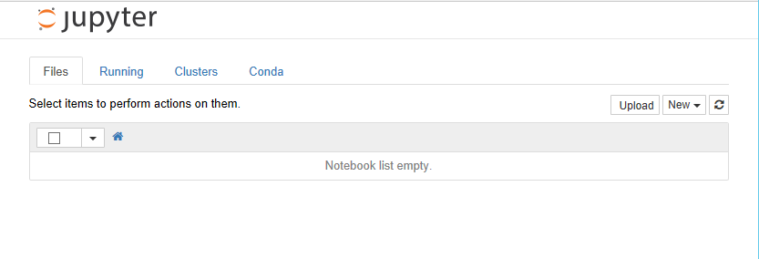
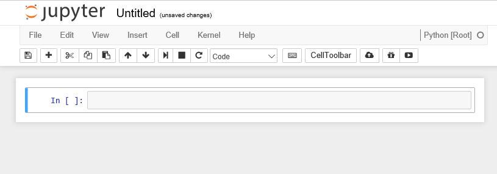
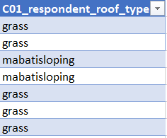
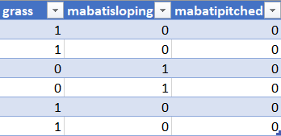
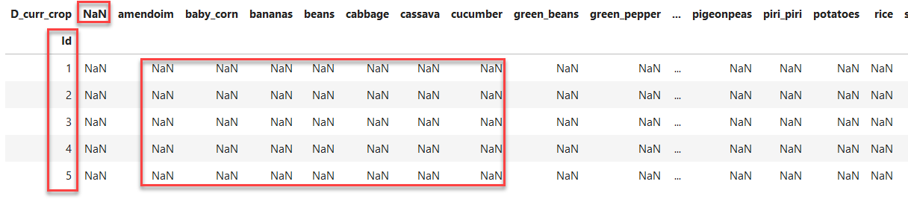

Introducing the Python programming language
Python is a general purpose programming language. It is an interpreted language, which makes it suitable for rapid development and prototyping of programming segments or complete small programs.
Python's main advantages:
- Open source software, supported by Python Software Foundation
- Available on all major platforms (Windows, macOS, Linux)
- It is a good language for new programmers to learn due to its straightforward, object-oriented style
- It is well-structured, which aids readability
- It is extensible (i.e. modifiable) and is supported by a large community who provide a comprehensive range of 3rd party packages
Interpreted vs. compiled languages
In any programming language, the code must be translated into "machine code" before running it. It is the machine code which is executed and produces results. In a language like C++ your code is translated into machine code and stored in a separate file, in a process referred to as compiling the code. You then execute the machine code from the file as a separate step. This is efficient if you intend to run the same machine code many times as you only have to compile it once and it is very fast to run the compiled machine code.
On the other hand, if you are experimenting, then your code will change often and you would have to compile it again every time before the machine can execute it. This is where interpreted languages have the advantage. You don't need a complete compiled program to "run" what has been written so far and see the results. This rapid prototyping is helped further by use of a system called REPL.
REPL
REPL is an acronym which stands for Read, Evaluate, Print and Loop.
REPL allows you to write single statements of code, have them executed, and if there are any results to show, they are displayed and then the interpreter loops back to the beginning and waits for the next program statement.

In the example above, two variables a and b have been created, assigned to values 2 and 3, and then multiplied together.
Every time you press Return, the line is interpreted. The assignment statements don't produce any output so you get only the standard >>> prompt.
For the a*b statement (it is more of an expression than a statement), because the result is not being assigned to a variable, the REPL displays the result of the calculation on screen and then waits for the next input.
The REPL system makes it very easy to try out small chunks of code.
You are not restricted to single line statements. If the Python interpreter decides that what you have written on a line cannot be a complete statement it will give you a continuation prompt of ... until you complete the statement.
Introducing Jupyter notebooks
Jupyter originates from IPython, an effort to make Python development more interactive. Since its inception, the scope of the project has expanded to include Julia, Python, and R, so the name was changed to "Jupyter" as a reference to these core languages. Today, Jupyter supports even more languages, but we will be using it only for Python code. Specifically, we will
be using Jupyter notebooks, which allows us to easily take notes about our analysis and view plots within the same document where we code. This facilitates sharing and reproducibility of analyses, and the notebook interface is easily accessible through any web browser. Jupyter notebooks are started from the terminal using
$ jupyter notebook
If you have a later version of Jupyter, you can also use
$ jupyter lab
The underlying notebooks in Jupyter lab work exactly the same way as they do in the original notebooks (they have the same file extension) but Jupyter lab is a richer environment adding several useful tools for a developer, like a file viewer.
Your browser should start automatically and look
something like this:

When you create a notebook from the New option, the new notebook will be displayed in a new browser tab and look like this.

Initially the notebook has no name other than 'Untitled'. If you click on 'Untitled' you will be given the option of changing the name to whatever you want.
The notebook is divided into cells. Initially there will be a single input cell marked by In [ ]:.
You can type Python code directly into the cell. You can split the code across several lines as needed. Unlike the REPL we looked at before, the code is not interpreted line by line. To interpret the code in a cell, you can click the Run button in the toolbar or from the Cell menu option, or use keyboard shortcuts (e.g., Shift+Return). All of the code in that cell will then be executed.
The results are shown in a separate Out [1]: cell immediately below. A new input cell (In [ ]:) is created for you automatically.

When a cell is run, it is given a number along with the corresponding output cell. If you have a notebook with many cells in it you can run the cells in any order and also run the same cell many times. The number on the left hand side of the input cells increments, so you can always tell the order in which they were run. For example, a cell marked In [5]: was the fifth cell run in the sequence.
Although there is an option to do so on the toolbar, you do not have to manually save the notebook. This is done automatically by the Jupyter system.
Not only are the contents of the In [ ]: cells saved, but so are the Out [ ]: cells. This allows you to create complete documents with both your code and the output of the code in a single place. You can also change the cell type from Python code to Markdown using the Cell > Cell Type option. Markdown is a simple formatting system which allows you to create documentation for your code, again all within the same notebook structure.
The notebook itself is stored as specially-formatted text file with an .ipynb extension. These files can be opened and run by others with Jupyter installed. This allows you to share your code inputs, outputs, and Markdown documentation with others. You can also export the notebook to HTML, PDF, and many other formats to make sharing even easier.
Using the Jupyter environment
New cells
From the insert menu item you can insert a new cell anywhere in the notebook either above or below the current cell. You can also use the + button on the toolbar to insert a new cell below.
Change cell type
By default new cells are created as code cells. From the cell menu item you can change the type of a cell from code to markdown. Markdown is a markup language for formatting text, it has much of the power of HTML, but is specifically designed to be human-readable as well. You can use Markdown cells to insert formatted textual explanation and analysis into your notebook. For more information about Markdown, check out these resources:
- Jupyter Notebook Markdown Docs
- Markdown - a Visual Guide
- Mastering Markdown from Github
- Markdown official open source project
Hiding output
When you run cells of code the output is displayed immediately below the cell. In general this is convenient. The output is associated with the cell that produced it and remains a part of the notebook. So if you copy or move the notebook the output stays with the code.
However lots of output can make the notebook look cluttered and more difficult to move around. So there is an option available from the cell menu item to 'toggle' or 'clear' the output associated either with an individual cell or all cells in the notebook.
Creating variables and assigning values
Variables and Types
In Python variables are created when you first assign values to them.
a = 2 b = 3.142
All variables have a data type associated with them. The data type is an indication of the type of data contained in a variable. If you want to know the type of a variable you can use the built-in type() function.
print(type(a)) print(type(b)) s = "Hello World" print(type(s))
<class 'int'>
<class 'float'>
<class 'str'>
There are many more data types available, a full list is available in the Python documentation. We will be looking a few of them later on.
Arithmetic operations
For now we will stick with the numeric types and do some arithmetic.
All of the usual arithmetic operators are available.
In the examples below we also introduce the Python comment symbol #.
Anything to the right of the # symbol is treated as a comment. To a large extent using Markdown cells in a notebook reduces the need for comments in the code in a notebook, but occasionally they can be useful.
We also make use of the built-in print() function, which displays formatted text.
print("a =", a, "and b =" , b) print(a + b) # addition print(a * b) # multiplication print(a - b) # subtraction print(a / b) # division print(b ** a) # exponentiation print(2 * a % b) # modulus - returns the remainder
a = 2 and b = 3.142
5.1419999999999995
6.284
-1.142
0.6365372374283896
9.872164
0.8580000000000001
We need to use the print() function because by default only the last output from a cell is displayed in the output cell.
In our example above, we pass four different parameters to the first call of print(), each separated by a comma. A string "a = ", followed by the variable a, followed by the string "b = " and then the variable b.
The output is what you would probably have guessed at.
All of the other calls to print() are only passed a single parameter. Although it may look like 2 or 3, the expressions are evaluated first and it is only the single result which is seen as the parameter value and printed.
In the last expression a is multiplied by 2 and then the modulus of the result is taken. Had I wanted to calculate a % b and then multiply the result by two I could have done so by using brackets to make the order of calculation clear.
Arithmetic expressions can be arbitrarily complex, but remember people have to read and understand them as well.
Exercise
-
Create a new cell and paste into it the assignments to the variables a and b and the contents of the code cell above with all of the print statements. Remove all of the calls to the print function so you only have the expressions that were to be printed and run the code. What is returned?
-
Now remove all but the first line (with the 4 items in it) and run the cell again. How does this output differ from when we used the print function?
-
Practice assigning values to variables using as many different operators as you can think of.
-
Create some expressions to be evaluated using parentheses to enforce the order of mathematical operations that you require
Solution - click me
- Only the last result is printed.
- The 4 'items' are printed by the REPL, but not in the same way as the print statement. The items in quotes are treated as separate strings, for the variables a and b the values are printed. All four items are treated as a 'tuple' which are shown in parentheses, a tuple is another data type in Python that allows you to group things together and treat as a unit. We can tell that it is a tuple because of the
()
A complete set of Python operators can be found in the official documentation . The documentation may appear a bit confusing as it initially talks about operators as functions whereas we generally use them as 'in place' operators. Section 10.3.1 provides a table which list all of the available operators, not all of which are relevant to basic arithmetic.
Using built-in functions
Python has a reasonable number of built-in functions. You can find a complete list in the official documentation.
Additional functions are provided by 3rd party packages which we will look at later on.
For any function, a common question to ask is: What parameters does this function take?
In order to answer this from Jupyter, you can type the function name and then type shift+tab and a pop-up window will provide you with various details about the function including the parameters.
Exercise
For the print() function find out what parameters can be provided
Solution - click me
Type 'print' into a code cell and then type shift+tab. The following pop-up should appear.

Getting Help for Python
You can get help on any Python function by using the help function. It takes a single parameter of the function name for which you want the help
help(print)
Help on built-in function print in module builtins:
print(...)
print(value, ..., sep=' ', end='\n', file=sys.stdout, flush=False)
Prints the values to a stream, or to sys.stdout by default.
Optional keyword arguments:
file: a file-like object (stream); defaults to the current sys.stdout.
sep: string inserted between values, default a space.
end: string appended after the last value, default a newline.
flush: whether to forcibly flush the stream.
There is a great deal of Python help and information as well as code examples available from the internet. One popular site is stackoverflow which specialises in providing programming help. They have dedicated forums not only for Python but also for many of the popular 3rd party Python packages. They also always provide code examples to illustrate answers to questions.
You can also get answers to your queries by simply inputting your question (or selected keywords) into any search engine.
A couple of things you may need to be wary of: There are currently 2 versions of Python in use, in most cases code examples will run in either but there are some exceptions. Secondly, some replies may assume a knowledge of Python beyond your own, making the answers difficult to follow. But for any given question there will be a whole range of suggested solutions so you can always move on to the next.
Data types and how Python uses them
Changing data types
The data type of a variable is assigned when you give a variable a value as we did above. If you re-assign the value of a variable, you can change the data type.
You can also explicitly change the type of a variable by casting it using an appropriate Python builtin function. In this example we have changed a string to a float.
a = "3.142" print(type(a)) a = float(a) print(type(a))
<class 'str'>
<class 'float'>
Although you can always change an integer to a float, if you change a float to an integer then you can lose part of the value of the variable and you won't get an error message.
a = 3.142 print(type(a)) a = 3 print(type(a)) a = a*1.0 print(type(a)) a = int(a) print(type(a)) a = 3.142 a = int(a) print(type(a)) print(a)
<class 'float'>
<class 'int'>
<class 'float'>
<class 'int'>
<class 'int'>
3
In some circumstances explicitly converting a data type makes no sense; you cannot change a string with alphabetic characters into a number.
b = "Hello World" print(type(b)) b = int(b) print(type(b))
<class 'str'>
---------------------------------------------------------------------------
ValueError Traceback (most recent call last)
<ipython-input-8-9f5f81a470f9> in <module>()
2 print(type(b))
3
----> 4 b = int(b)
5 print(type(b))
ValueError: invalid literal for int() with base 10: 'Hello World'
Strings
A string is a simple data type which holds a sequence of characters.
Strings are placed in quotes when they are being assigned, but the quotes don't count as part of the string value.
If you need to use quotes as part of your string you can arbitrarily use either single of double quotes to indicate the start and end of the string.
mystring = "Hello World" print(mystring) name = "Peter" mystring = 'Hello ' + name + ' How are you?' print(mystring) name = "Peter" mystring = 'Hello this is ' + name + "'s code" print(mystring)
Hello World
Hello Peter How are you?
Hello this is Peter's code
String functions
There are a variety of Python functions available for use with strings. In Python a string is an object. An object put simply is something which has data, in the case of our string it is the contents of the string and methods. methods is another way of saying functions.
Although methods and functions are very similar in practice, there is a difference in the way you call them.
One typical bit of information you might want to know about a string is its length for this we use the len() function. For almost anything else you might want to do with strings, there is a method.
mystring = "Hello World" print(len(mystring))
11
If you want to see a list of all of the available methods for a string (or any other object) you can use the dir() function.
print(dir(mystring))
['__add__', '__class__', '__contains__', '__delattr__', '__dir__', '__doc__', '__eq__', '__format__', '__ge__', '__getattribute__', '__getitem__', '__getnewargs__', '__gt__', '__hash__', '__init__', '__iter__', '__le__', '__len__', '__lt__', '__mod__', '__mul__', '__ne__', '__new__', '__reduce__', '__reduce_ex__', '__repr__', '__rmod__', '__rmul__', '__setattr__', '__sizeof__', '__str__', '__subclasshook__', 'capitalize', 'casefold', 'center', 'count', 'encode', 'endswith', 'expandtabs', 'find', 'format', 'format_map', 'index', 'isalnum', 'isalpha', 'isdecimal', 'isdigit', 'isidentifier', 'islower', 'isnumeric', 'isprintable', 'isspace', 'istitle', 'isupper', 'join', 'ljust', 'lower', 'lstrip', 'maketrans', 'partition', 'replace', 'rfind', 'rindex', 'rjust', 'rpartition', 'rsplit', 'rstrip', 'split', 'splitlines', 'startswith', 'strip', 'swapcase', 'title', 'translate', 'upper', 'zfill']
The methods starting with __ are special or magic methods which are not normally used.
Some examples of the methods are given below. We will use others when we start reading files.
myString = "The quick brown fox" print(myString.startswith("The")) print(myString.find("The")) # notice that string positions start with 0 like all indexing in Python print(myString.upper()) # The contents of myString is not changed, if you wanted an uppercase version print(myString) # you would have to assign it to a new variable
The methods starting with 'is...' return a boolean value of either True or False
print(myString.isalpha())
The example above returns False because the space character is not considered to be an Alphanumeric value.
In the example below, we can use the replace() method to remove the spaces and then check to see if the result isalpha. Chaining methods in this way is quite common. The actions take place in a left to right manner. You can always avoid using chaining by using intermediary variables.
print(myString.replace(" ","").isalpha())
For example, the following is equivalent to the above
mystring_clean = myString.replace(" ","") print(mystring_clean.isalpha())
True
0
THE QUICK BROWN FOX
The quick brown fox
False
True
If you need to refer to a specific element (character) in a string, you can do so by specifying the index of the character in [] you can also use indexing to select a substring of the string. In Python, indexes begin with 0 (see Index Operator: Working with the Characters of a String for a visual).
myString = "The quick brown fox" print(myString[0]) print(myString[12]) print(myString[18]) print(myString[0:3]) print(myString[0:]) # from index 0 to the end print(myString[:9]) # from the beginning to one before index 9 print(myString[:9])
T
o
x
The
The quick brown fox
The quick
The quick
Basic Python data types
So far we have seen three basic Python data types; Integer, Float and String. There is another basic data type; Boolean. Boolean variables can only have the values of either True or False. (Remember, Python is case sensitive, so be careful of your spelling.)
We can define variables to be of type boolean by setting their value accordingly. Boolean variables are a good way of coding anything that has a binary range (eg: yes/no), because it's a type that computers know how to work with as we will see soon.
bool_val_t = True print(type(bool_val_t)) print(bool_val_t) bool_val_f = False print(type(bool_val_f)) print(bool_val_f)
We can also get variables of this type using comparison operators, basic ones in Python are == for "equal to", != for "not equal to", and >, <, or >=, <=.
print('hello' == 'HELLO') print('hello' is 'hello') print(3 != 77) print(1 < 2) print('four' > 'three')
False
True
True
True
False
Structured data types
A structured data type is a data type which is made up of some combination of the base data types in a well defined but potentially arbitrarily complex way.
The list
A list is a set of values, of any type separated by commas and delimited by '[' and ']'
list1 = [6, 54, 89 ] print(list1) print(type(list1)) list2 = [3.142, 2.71828, 9.8 ] print(list2) print(type(list2)) myname = "Peter" list3 = ["Hello", 'to', myname ] print(list3) myname = "Fred" print(list3) print(type(list3)) list4 = [6, 5.4, "numbers", True ] print(list4) print(type(list4))
[6, 54, 89]
<class 'list'>
[3.142, 2.71828, 9.8]
<class 'list'>
['Hello', 'to', 'Peter']
['Hello', 'to', 'Peter']
<class 'list'>
[6, 5.4, 'numbers', True]
<class 'list'>
Exercise
We can index lists the same way we indexed strings before or using a boolean list of the same length.
num_list = [4,5,6,11]
Using the number list defined above, complete the code below and display the values of odd_from_list and last_num_in_list to check your work.
is_odd = [False, ___] odd_from_list = last_num_in_list =
Solution - click me
is_odd = [False, True, False, True] odd_from_list = num_list[is_odd] last_num_in_list = num_list[-1]
The range function
In addition to explicitly creating lists as we have above it is very common to create and populate them automatically using the range() function in combination with the list() function
list5 = list(range(5)) print(list5)
[0, 1, 2, 3, 4]
Unless told not to range() returns a sequence which starts at 0, counts up by 1 and ends 1 before the value of the provided parameter.
This can be a cause of confusion. range(5) above does indeed have 5 values, but rather than being 1,2,3,4,5 which you might naturally think, they are in fact 0,1,2,3,4. The range starts at 0 and stops one before the value of the single parameter we specified.
If you want different sequences, then you can modify the behavior of the range() function by using additional parameters.
list6 = list(range(1, 9)) print(list6) list7 = list(range(2, 11, 2)) print(list7)
[1, 2, 3, 4, 5, 6, 7, 8]
[2, 4, 6, 8, 10]
When you specify 3 parameters as we have for list(7); the first is start value, the second is one past the last value and the 3rd parameter is a step value by which to count. The step value can be negative
list7 produces the even numbers from 1 to 10.
Exercise
- What is produced if you change the step value in
list7to -2 ? Is this what you expected? - Create a list using the
range()function which contains the even number between 1 and 10 in reverse order ([10,8,6,4,2])
Solution - click me
list7 = list(range(2, 11, -2)) print(list7) list8 = list(range(10, 1, -2)) print(list8)
list7 will print nothing because starting at 2 and incrementing by -2 is the wrong direction to 11.
The other main structured data type is the Dictionary. We will introduce this in a later episode when we look at JSON.
Programs are rarely linear
Most programs do not work by executing a simple sequential set of statements. The code is constructed so that decisions and different paths through the program can be taken based on changes in variable values.
To make this possible all programming language have a set of control structures which allow this to happen.
In this episode we are going to look at how we can create loops and branches in our Python code.
Specifically we will look at three control structures, namely:
- If..Else..
- While...
- For ...
The if statement and variants
The simple if statement allows the program to branch based on the evaluation of an expression
The basic format of the if statement is:
if expression : statement 1 statement 2 ... statement n statement always executed
If the expression evaluates to True then the statements 1 to n will be executed followed by statement always executed . If the expression is False, only statement always executed is executed. Python knows which lines of code are related to the if statement by the indentation, no extra syntax is necessary.
Below are some examples:
print("\nExample 1\n") value = 5 threshold= 4 print("value is", value, "threshold is ",threshold) if value threshold : print(value, "is above ", threshold, " threshold") print("\nExample 2\n") high_threshold = 6 print("value is", value, "new threshold is ",high_threshold) if value high_threshold : print(value , "is above ", high_threshold, "threshold") print("\nExample 3\n") mid_threshold = 5 print("value is", value, "final threshold is ",mid_threshold) if value == mid_threshold : print("value, ", value, " and threshold,", mid_threshold, ", are equal")
Example 1
value is 5 threshold is 4
5 is bigger than 4
Example 2
value is 5 new threshold is 6
Example 3
value is 5 final threshold is 5
value, 5, and threshold, 5, are equal
In the examples above there are three things to notice:
- The colon
:at the end of theifline. Missing this out is a common error. - The indentation of the print statement. If you remembered the
:on the line before, Jupyter (or any other Python IDE) will automatically do the indentation for you. All of the statements indented at this level are considered to be part of theifstatement. This is a feature fairly unique to Python, that it cares about the indentation. If there is too much, or too little indentation, you will get an error. - The
ifstatement is ended by removing the indent. There is no explicit end to theifstatement as there is in many other programming languages
In the last example, notice that in Python the operator used to check equality is ==.
Exercise
Add another if statement to example 2 that will check if b is greater than or equal to a
Solution
print("\nExample 2a\n")
a= 3
b= 4
print("a is", a, "b is",b)
if a b :
print(a, "is bigger than ", b)
if a <= b :
print(b, "is bigger than or equal to ", a)
Instead of using two separate if statements to decide which is larger we can use the if ... else ... construct
# If ... Else ... <p class="mume-header " id="if-else"></p> value = 4 threshold = 5 print("value = ", value, "and threshold = ", threshold) if value threshold : print("above threshold") else : print("below threshold")
value = 4 and threshold = 5
below threshold
Exercise
Repeat above with different operators '<' , '=='
A further extension of the if statement is the if ... elif ...else version.
The example below allows you to be more specific about the comparison of a and b.
# If ... Elif ... Else ... EndIf <p class="mume-header " id="if-elif-else-endif"></p> a = 5 b = 4 print("a = ", a, "and b = ", b) if a b : print(a, " is greater than ", b) elif a == b : print(a, " equals ", b) else : print(a, " is less than ", b)
a = 5 and b = 4
5 is greater than 4
The overall structure is similar to the if ... else statement. There are three additional things to notice:
- Each
elifclause has its own test expression. - You can have as many
elifclauses as you need - Execution of the whole statement stops after an
elifexpression is found to be True. Therefore the ordering of theelifclause can be significant.
The while loop
The while loop is used to repeatedly execute lines of code until some condition becomes False.
For the loop to terminate, there has to be something in the code which will potentially change the condition.
# while loop <p class="mume-header " id="while-loop"></p> n = 10 cur_sum = 0 # sum of n numbers <p class="mume-header " id="sum-of-n-numbers"></p> i = 1 while i <= n : cur_sum = cur_sum + i i = i + 1 print("The sum of the numbers from 1 to", n, "is ", cur_sum)
The sum of the numbers from 1 to 10 is 55
Points to note:
- The condition clause (i <= n) in the while statement can be anything which when evaluated would return a Boolean value of either True of False. Initially i has been set to 1 (before the start of the loop) and therefore the condition is
True. - The clause can be made more complex by use of parentheses and
andandoroperators amongst others - The statements after the while clause are only executed if the condition evaluates as True.
- Within the statements after the while clause there should be something which potentially will make the condition evaluate as
Falsenext time around. If not the loop will never end. - In this case the last statement in the loop changes the value of i which is part of the condition clause, so hopefully the loop will end.
- We called our variable
cur_sumand notsumbecausesumis a builtin function (try typing it in, notice the editor changes it to green). If we definesum = 0now we can't use the functionsumin this Python session.
Exercise - Things that can go wrong with while loops
In the examples below, without running them try to decide why we will not get the required answer.
Run each, one at a time, and then correct them. Remember that when the input next to a notebook cell is [*] your Python interpreter is still working.
# while loop - summing the numbers 1 to 10 <p class="mume-header " id="while-loop-summing-the-numbers-1-to-10"></p> n = 10 cur_sum = 0 # sum of n numbers <p class="mume-header " id="sum-of-n-numbers-1"></p> i = 0 while i <= n : i = i + 1 cur_sum = cur_sum + i print("The sum of the numbers from 1 to", n, "is ", cur_sum)
# while loop - summing the numbers 1 to 10 n = 10 cur_sum = 0 boolvalue = False # sum of n numbers i = 0 while i <= n and boolvalue: cur_sum = cur_sum + i i = i + 1 print("The sum of the numbers from 1 to", n, "is ", cur_sum)
# while loop - summing the numbers 1 to 10 n = 10 cur_sum = 0 # sum of n numbers i = 0 while i != n : cur_sum = cur_sum + i i = i + 1 print("The sum of the numbers from 1 to", n, "is ", cur_sum)
# while loop - summing the numbers 1.1 to 9.9 i. steps of 1.1 n = 9.9 cur_sum = 0 # sum of n numbers i = 0 while i != n : cur_sum = cur_sum + i i = i + 1.1 print(i) print("The sum of the numbers from 1.1 to", n, "is ", sum)
Solution - click me
- Because i is incremented before the sum, you are summing 1 to 11.
- The Boolean value is set to False the loop will never be executed.
- When i does equal 10 the expression is False and the loop does not execute so we have only summed 1 to 9
- Because you cannot guarantee the internal representation of Float, you should never try to compare them for equality. In this particular case the i never 'equals' n and so the loop never ends. - If you did try running this, you can stop it using Ctrl+c</kbdin a terminal or going to the kernel menu of a notebook and choosing interrupt.
The for loop
The for loop, like the while loop repeatedly executes a set of statements. The difference is that in the for loop we know in at the outset how often the statements in the loop will be executed. We don't have to rely on a variable being changed within the looping statements.
The basic format of the for statement is
for variable_name in some_sequence : statement1 statement2 ... statementn
The key part of this is the some_sequence. The phrase used in the documentation is that it must be 'iterable'. That means, you can count through the sequence, starting at the beginning and stopping at the end.
There are many examples of things which are iterable some of which we have already come across.
- Lists are iterable - they don't have to contain numbers, you iterate over the elements in the list.
- The
range()function - The characters in a string
print("\nExample 1\n") for i in [1,2,3] : print(i) print("\nExample 2\n") for name in ["Tom", "Dick", "Harry"] : print(name) print("\nExample 3\n") for name in ["Tom", 42, 3.142] : print(name) print("\nExample 4\n") for i in range(3) : print(i) print("\nExample 5\n") for i in range(1,4) : print(i) print("\nExample 6\n") for i in range(2, 11, 2) : print(i) print("\nExample 7\n") for i in "ABCDE" : print(i) print("\nExample 8\n") longString = "The quick brown fox jumped over the lazy sleeping dog" for word in longString.split() : print(word)
Example 1
1
2
3
Example 2
Tom
Dick
Harry
Example 3
Tom
42
3.142
Example 4
0
1
2
Example 5
1
2
3
Example 6
2
4
6
8
10
Example 7
A
B
C
D
E
Example 8
The
quick
brown
fox
jumped
over
the
lazy
sleeping
dog
Exercise
Suppose that we have a string containing a set of 4 different values separated by ; like this:
items_owned = "bicycle;television;solar_panel;table"
Research the split() method and then rewrite example 8 so that it prints the 4 components of items_owned
Solution - click me
variablelist = "01/01/2010,34.5,Yellow,True" for word in variablelist.split(",") : print(word)
The format of variablelist is very much like that of a record in a csv file. In later episodes we will see how we can extract these values and assign them to variables for further processing rather than printing them out.
Defining a function
We have already made use of several Python builtin functions like print, list and range.
In addition to the functions provided by Python, you can write your own functions.
Functions are used when a section of code needs to be repeated at various different points in a program. It saves you re-writing it all. In reality you rarely need to repeat the exact same code. Usually there will be some variation in variable values needed. Because of this, when you create a function you are allowed to specify a set of parameters which represent variables in the function.
In our use of the print function we have provided as a parameter, whatever it is we wanted to print. Typically whenever we use the print function we pass a different parameter value.
The ability to specify parameters make functions very flexible.
def get_item_count(item_str,sep): ''' This function takes a string with a list of items and the character that they're separated by and returns the number of items ''' items_list = items_str.split(sep) num_items = len(items_list) return num_items items_owned = "bicycle;television;solar_panel;table" print(get_item_count(items_owned,';')
4
Points to note:
- The definition of a function (or procedure) starts with the def keyword and is followed by the name of the function with any parameters used by the function in brackets.
- The definition clause is terminated with a
:which causes indentation on the next and subsequent lines. All of these lines form the statements which make up the function. The function ends after the indentation is removed. - Within the function, the parameters behave as variables whose initial values will be those that they were given when the function was called.
- functions have a return statement which specifies the value to be returned. This is the value assigned to the variable on the left-hand side of the call to the function. (power in the example above)
- You call (run the code) of a function simply by providing its name and values for its parameters the same way you would for any builtin function.
- Once the definition of the function has been executed, it becomes part of Python for the current session and can be used anywhere.
- Like any other builtin function you can use
shift+tabin Jupyter to see the parameters. - At the beginning of the function code we have a multiline
commentdenoted by the'''at the beginning and end. This kind of comment is known as adocstringand can be used anywhere in Python code as a documentation aid. It is particularly common, and indeed best practice, to use them to give a brief description of the function at the beginning of a function definition in this way. This is because this description will be displayed along with the parameters when you use the help() function orshift+tabin Jupyter. - The variable
xdefined within the function only exists within the function, it cannot be used outside in the main program.
In our get_item_count function we have two parameters which must be provided every time the function is used. You need to provide the parameters in the right order or to explicitly name the parameter you are referring to and use the = sign to give it a value.
In many cases of functions we want to provide default values for parameters so the user doesn't have to. We can do this in the following way
def get_item_count(item_str,sep=';'): ''' This function takes a string with a list of items and the character that they're separated by and returns the number of items ''' items_list = items_str.split(sep) num_items = len(items_list) return num_items print(get_item_count(items_owned)
9
The only change we have made is to provide a default value for the sep parameter. Now if the user does not provide a value, then the value of 2 will be used. Because items_str is the first parameter we can specify its value by position. We could however have explicitly named the parameters we were referring to.
print(get_item_count(sep = ',')) print(get_item_count(items_str = items_owned, sep=';'))
1
4
Exercise
-
Write a function definition to calculate the volume of a cuboid. The function will use three parameters
H,WandLand return the volume. -
Supposing that in addition to the volume I also wanted to calculate the surface area and the sum of all of the edges. Would I (or should I) have three separate functions or could I write a single function to provide all three values together?
Solution - click me
def cuboid(H,W,L): vol = H*W*L sa = 2*(H*W + H*L + L*W) edges = 4*(H + W + L) return vol, sa, edges volume, surface_area, length_of_edges = cuboid(2,3,4) print("Volume = ", volume, " Surface_area = ", surface_area, " Sum of edges = ", length_of_edges)
The cuboid function above returns all three values from a single call. This means that you need three variables in which to place the 3 returned values. If you do not provide three variables, you will get an error.
Unless you are always going to use the 3 values, it would probably be better in this case to use distinct functions for these three cases.
Using libraries
The functions we have created above only exist for the duration of the session in which they have been defined. If you start a new Jupyter notebook you will have to run the code to define them again.
If all of your code is in a single file or notebook this isn't really a problem.
There are however many (thousands) of useful functions which other people have written and have made available to all Python users by creating libraries (also referred to as packages or modules) of functions.
You can find out what all of these libraries are and their contents by visiting the main (python.org) site.
We need to go through a 2-step process before we can use them in our own programs.
Step 1. use the pip command from the commandline. pip is installed as part of the Python install and is used to fetch the package from the Internet and install it in your Python configuration.
pip install <package name>
pip stands for Python install package and is a commandline function. Because we are using the Anaconda distribution of Python, all of the packages that we will be using in this lesson are already installed for us, so we can move straight on to step 2.
Step 2. In your Python code include an import package-name statement. Once this is done, you can use all of the functions contained within the package.
As all of these packages are produced by 3rd parties independently of each other, there is the strong possibility that there may be clashes in function names. To allow for this, when you are calling a function from a package that you have imported, you do so by prefixing the function name with the package name. This can make for long-winded function names so the import statement allows you to specify an alias for the package name which you must then use instead of the package name.
In future episodes, we will be importing the csv, json, pandas, numpy and matplotlib modules. We will describe their use as we use them.
The code that we will use is shown below
import csv import json import pandas as pd import numpy as np import matplotlib.pyplot as plt
The first two we don't alias as they have short names. The last three we do. Matplotlib is a very large library broken up into what can be thought of as sub-libraries. As we will only be using the functions contained in the pyplot sub-library we can specify that explicitly when we import. This saves time and space. It does not effect how we call the functions in our code.
The alias we use (specified after the as keyword) is entirely up to us. However those shown here for pandas, numpy and matplotlib are nearly universally adopted conventions used for these popular libraries. If you are searching for code examples for these libraries on the Internet, using these aliases will appear most of the time.
Reading and Writing datasets
In all of our examples so far, we have directly allocated values to variables in the code we have written before using the variables.
Python has an input() function which will ask for input from the user, but for any large amounts of data this will be an impractical way of collecting data.
The reality is that most of the data that your program uses will be read from a file. Additionally, apart from when you are developing, most of your program output will be written to a file.
In this episode we will look at how to read and write files of data in Python.
There are in fact many different approaches to reading data files and which one you choose will depend on such things as the size of the file and the data format of the file.
In this episode we will;
- We will read a file which is in .csv (Comma Separated Values) format.
- We will use standard core Python functions to do this
- We will read the file one line at a time ( line = record = row of a table)
- We will perform simple processing of the file data and print the output
- We will split the file into smaller files based on some processing
The file we will be using is only a small file (350 data records), but the approach we are using will work for any size of file. Imagine 35M records. This is because we only process one record at a time so the memory requirements of the programs will be very small. The larger the file the more the processing time required.
Other approaches to reading files will typically expect to read the whole file in one go. This can be efficient when you subsequently process the data but it require large amounts of memory to hold the entire file. We will look at this approach later when the look at the Pandas package.
For our examples in this episode we are going to use the SAFI_farms.csv file. This is available for download here and the description of the file is available here
The code assumes that the file is in a /data/ directory within the same directory as your notebook. If you have saved your datafiles elsewhere, you may need to adjust the code accordingly.
We will build up our programs in simple steps
Step 1 - Open the file , read through it and close the file
filename = "data/SAFI_farms.csv" f = open(filename, "r") # open the file whose name is in filename, the 'r' means we want to read from the file # the open function returns what is called a file handle. we use this to refer to the file for line in f: # We use a for loop to iterate through the file one line at a time. print(line) # we simply print the line f.close() # Always close the file at the end.
Column1,A01_interview_date,A03_quest_no,A04_start,A05_end,A06_province,A07_district,A08_ward,A09_village,A11_years_farm,A12_agr_assoc,B11_remittance_money,B16_years_liv,B17_parents_liv,B18_sp_parents_liv,B19_grand_liv,B20_sp_grand_liv,B_no_membrs,C01_respondent_roof_type,C02_respondent_wall_type,C02_respondent_wall_type_other,C03_respondent_floor_type,C04_window_type,C05_buildings_in_compound,C06_rooms,C07_other_buildings,D_plots_count,E01_water_use,E17_no_enough_water,E19_period_use,E20_exper_other,E21_other_meth,E23_memb_assoc,E24_resp_assoc,E25_fees_water,E26_affect_conflicts,E_no_group_count,E_yes_group_count,F04_need_money,F05_money_source_other,F06_crops_contr,F08_emply_lab,F09_du_labour,F10_liv_owned_other,F12_poultry,F13_du_look_aftr_cows,F_liv_count,G01_no_meals,_members_count,_note,gps:Accuracy,gps:Altitude,gps:Latitude,gps:Longitude,instanceID
0,17/11/2016,1,2017-03-23T09:49:57.000Z,2017-04-02T17:29:08.000Z,Province1,District1,Ward2,Village2,11,no,no,4,no,yes,no,yes,3,grass,muddaub,,earth,no,1,1,no,2,no,,,,,,,,,2,,,,,no,no,,yes,no,1,2,3,,14,698,-19.11225943,33.48345609,uuid:ec241f2c-0609-46ed-b5e8-fe575f6cefef
...
You can think of the file as being a list of strings. Each string in the list is one complete line from the file.
If you look at the output, you can see that the first record in the file is a header record containing column names. When we read a file in this way, the column headings have no significance, the computer sees them as another record in the file.
Step 2 - Select a specific 'column' from the records in the file
We know that the first record in the file is a header record and we want to ignore it. To do this we call the readline() method of the file handle f. We don't need to assign the line that it will return to a variable as we are not going to use it.
As we read the file the line variable is a string containing a complete record. The fields or columns of the record are separated by each other by "," as it is a csv file.
As line is a string we can use the split() method to convert it to a list of column values. We are specicically going to select the column which is the 21st entry in the list (remember the list index starts at 0). This refers to the C01_respondent_roof_type column. We are going to examine the different roof types.
filename = "data/SAFI_farms.csv" f = open(filename, "r") # first line is a header so ignore it f.readline() for line in f: print(line.split(",")[20]) # index 20, the 21st column is C01_respondent_roof_type f.close()
grass
grass
mabatisloping
mabatisloping
grass
grass
grass
mabatisloping
...
Having a list of the roof types from all of the records is one thing, but it is more likely that we would want a count of each type. By scanning up and down the previous output, there appears to be 3 different type, but we will play safe and assume there may be more.
Step 3 - How many of each different roof types are there?
# 1 filename = "data/SAFI_farms.csv" f = open(filename, "r") # 2 f.readline() # 3 grass_roof = 0 mabatisloping_roof = 0 mabatipitched_roof = 0 roof_type_other = 0 for line in f: # 4 roof_type = line.split(",")[20] # 5 if roof_type == 'grass' : grass_roof += 1 elif roof_type == 'mabatisloping' : mabatisloping_roof += 1 elif roof_type == 'mabatipitched' : mabatipitched_roof += 1 else : roof_type_other += 1 #6 f.close() #7 print("There are ", grass_roof, " grass roofs") print("There are ", mabatisloping_roof, " mabatisloping roofs") print("There are ", mabatipitched_roof, " mabatipitched roofs") print("There are ", roof_type_other, " other roof types")
There are 73 grass roofs
There are 48 mabatisloping roofs
There are 10 mabatipitchedg roofs
There are 0 other roof types
What are we doing here?
- Open the file
- Ignore the headerline
- Initialise roof type variables to 0
- Extract the C01_respondent_roof_type information from each record
- Increment the appropriate variable
- close the file
- Print out the results
Instead of printing out the counts of the roof types, you may want to extract all of one particular roof type to a separate file. Let us assume we want all of the grass roof records to be written to a file.
# 1 filename = "data/SAFI_farms.csv" fr = open(filename, "r") filename = "data/SAFI_grass_roof.csv" fw = open(filename, "w") #2 fw.write(fr.readline()) for line in fr: # 3 if line.split(",")[20] == 'grass' : fw.write(line) #4 fr.close() fw.close()
What are we doing here?
- Open the files. Because there are now two files, each has its own file handle:
frfor the file we read andfwfor the file we are going to write. (They are just variable names so you can use anything you like). For the file we are going to write to we usewfor the second parameter. If the file does not exist it will be created. If it does exist, then the contents will be overwritten. If we want to append to an existing file we can useaas the second parameter. - Read the first line, which are the column headers and write it directly to the output file.
- Because we are just testing a specific field from the record to have a certain value, we don't need to put it into a variable first. If the expression is True, then we use
write()method to write the complete line just as we read it to the output file. - Close the files
Exercise
From the SAFI_results.csv file extract all of the records where the C01_respondent_roof_type (index 18) has a value of 'grass' and the C02_respondent_wall_type (index 19) has a value of 'muddaub' and write them to a file. Within the same program write all of the records where C01_respondent_roof_type (index 18) has a value of 'grass' and the C02_respondent_wall_type (index 19) has a value of 'burntbricks' and write them to a separate file. In both files include the header record.
Solution - click me
filename = "data/SAFI_farms.csv" fr = open(filename, "r") filename = "data/SAFI_grass_roof_muddaub.csv" fw1 = open(filename, "w") filename = "data/SAFI_grass_roof_burntbricks.csv" fw2 = open(filename, "w") headerline = fr.readline() fw1.write(headerline) fw2.write(headerline) for line in fr: if line.split(",")[20] == 'grass' : if line.split(",")[21] == 'muddaub' : fw1.write(line) if line.split(",")[21] == 'burntbricks' : fw2.write(line) fr.close() fw1.close() fw2.close()
In our example of printing the counts for the roof types, we assumed that we knew what the likely roof types were. Although we did have an 'other' option to catch anything we missed. Had there been any we would still be non the wiser as to what they represented. We were able to decide on the specific roof types by manually scanning the list of C01_respondent_roof_type values. This was only practical because of the small file size. For a multi-million record file we could not have done this.
We would like a way of creating a list of the different roof types and at the same time counting them. We can do this by using not a Python list structure, but a Python dictionary .
The Python dictionary structure
In Python a dictionary object maps keys to values. A dictionary can hold any number of keys and values but a key cannot be duplicated.
The following code shows examples of creating a dictionary object and manipulating keys and values.
# an empty dictionary myDict = {} # A dictionary with a single Key-value pair personDict = {'Name' : 'Peter'} # I can add more about 'Peter' to the dictionary personDict['Location'] = 'Manchester' # I can print all of the keys and values from the dictionary print(personDict.items()) # I can print all of the keys and values from the dictionary - and make it look a bit nicer for item in personDict: print(item, "=", personDict[item]) # or all of the keys print(personDict.keys()) # or all of the values print(personDict.values()) # I can access the value for a given key x = personDict['Name'] print(x) # I can change value for a given key personDict['Name'] = "Fred" print(personDict['Name']) # I can check if a key exists key = 'Name' if key in personDict : print("already exists") else : personDict[key] = "New value"
dict_items([('Location', 'Manchester'), ('Name', 'Peter')])
Location = Manchester
Name = Peter
dict_keys(['Location', 'Name'])
dict_values(['Manchester', 'Peter'])
Peter
Fred
already exists
Exercise
- Create a dictionary called
dict_roof_typeswith initial keys oftype1andtype2and give them values of 1 and 3. - Add a third key
type3with a value of 6. - Add code to check if a key of
type4exists. If it does not add it to the dictionary with a value of 1 if it does, increment its value by 1 - Add code to check if a key of
type2exists. If it does not add it to the dictionary with a value of 1 if it does, increment its value by 1 - Print out all of the keys and values from the dictionary
Solution - click me
# 1 dict_roof_types = {'type1' : 1 , 'type2' : 3} # 2 dict_roof_types['type3'] = 6 # 3 key = 'type4' if key in dict_roof_types : dict_roof_types[key] += 1 else : dict_roof_types[key] = 1 # 4 key = 'type2' if key in dict_roof_types : dict_roof_types[key] += 1 else : dict_roof_types[key] = 1 # 5 for item in dict_roof_types: print(item, "=", dict_roof_types[item])
We are now in a position to re-write our count of roof types example without knowing in advance what any of the roof types are.
# 1 filename = "data/SAFI_farms.csv" f = open(filename, "r") # 2 f.readline() # 3 dict_roof_types = {} for line in f: # 4 roof_type = line.split(",")[20] # 5 if roof_type in dict_roof_types : dict_roof_types[roof_type] += 1 else : dict_roof_types[roof_type] = 1 # 6 f.close() # 7 for item in dict_roof_types: print(item, "=", dict_roof_types[item])
grass = 212
mabatisloping = 126
mabatipitched = 12
What are we doing here?
- Open the file
- Ignore the headerline
- Create an empty dictionary
- Extract the C01_respondent_roof_type information from each record
- Either add to the dictionary with a value of 1 or increment the current value for the key by 1
- close the file
- Print out the contents of the dictionary
You can apply the same approach to count values in any of the fields/columns of the file.
Date and Times in Python
To use the date and time functions in Python you need to import the datetime module.
from datetime import datetime
Python can be very flexible in how it interprets 'strings' which you want to be considered as a date, time, or date and time, but you have to tell Python how the various parts of the date and/or time are represented in your 'string'.
You can do this by creating a format. In a format, different case sensitive characters preceded by the % character act as placeholders for parts of the date/time, for example %Y represents year formatted as 4 digit number such as 2014.
A full list of the characters used and what they represent can be found towards the end of the datetime section of the official Python documentation.
There is a today() method which allows you to get the current date and time.
By default it is displayed in a format similar to the ISO 8601 standard format.
from datetime import datetime today = datetime.today() print('ISO :', today)
ISO : 2018-04-12 16:19:17.177441
We can use our own formatting instead. For example, if we wanted words instead of number and the 4 digit year at the end we could use the following.
format = "%a %b %d %H:%M:%S %Y" today_str = today.strftime(format) print('strftime:', today_str) print(type(today_str)) today_date = datetime.strptime(today_str, format) print('strptime:', today_date.strftime(format)) print(type(today_date))
strftime: Thu Apr 12 16:19:17 2018
<class 'str'>
strptime: Thu Apr 12 16:19:17 2018
<class 'datetime.datetime'>
strftime converts a datetime object to a string and strptime creates a datetime object from a string. When you print them using the same format string, they look the same.
The format of the date fields (A04_start and A05_end) in the SAFI_farms.csv file have been generated automatically to comform to the ISO 8601 standard.
When we read the file and extract the date fields, they are of type string. Before we can use them as dates, we need to convert them into Python date objects.
In the format string we use below, the - , : , T and Z characters are just that, characters in the string representing the date/time.
Only the character preceded with % have special meanings.
Having converted the strings to datetime objects, there are a variety of methods that we can use to extract different components of the date/time.
from datetime import datetime format = "%Y-%m-%dT%H:%M:%S.%fZ" f = open('SAFI_farms.csv', 'r') #skip the header line line = f.readline() # next line has data line = f.readline() strdate_start = line.split(',')[4] # A04_start strdate_end = line.split(',')[5] # A05_end print(type(strdate_start), strdate_start) print(type(strdate_end), strdate_end) # the full date and time datetime_start = datetime.strptime(strdate_start, format) print(type(datetime_start)) datetime_end = datetime.strptime(strdate_end, format) print('formatted date and time', datetime_start) print('formatted date and time', datetime_end) # the date component date_start = datetime.strptime(strdate_start, format).date() print(type(date_start)) date_end = datetime.strptime(strdate_end, format).date() print('formatted start date', date_start) print('formatted end date', date_end) # the time component time_start = datetime.strptime(strdate_start, format).time() print(type(time_start)) time_end = datetime.strptime(strdate_end, format).time() print('formatted start time', time_start) print('formatted end time', time_end) f.close()
<class 'str'> 2017-03-23T09:49:57.000Z
<class 'str'> 2017-04-02T17:29:08.000Z
<class 'datetime.datetime'>
formatted date and time 2017-03-23 09:49:57
formatted date and time 2017-04-02 17:29:08
<class 'datetime.date'>
formatted start date 2017-03-23
formatted end date 2017-04-02
<class 'datetime.time'>
formatted start time 09:49:57
formatted end time 17:29:08
Components of dates and times
For a date or time we can also extract individual components of them.
They are held internally in the datetime datastructure.
# date parts. print('formatted end date', date_end) print(' end date year', date_end.year) print(' end date month', date_end.month) print(' end date day', date_end.day) print (type(date_end.day)) # time parts. print('formatted end time', time_end) print(' end time hour', time_end.hour) print(' end time minutes', time_end.minute) print(' end time seconds', time_end.second) print(type(time_end.second))
formatted end date 2017-04-02
end date year 2017
end date month 4
end date day 2
<class 'int'>
formatted end time 17:29:08
end time hour 17
end time minutes 29
end time seconds 8
<class 'int'>
Date arithmetic
We can also do arithmetic with the dates.
date_diff = datetime_end - datetime_start print('formatted date and time (start)', datetime_start) print('formatted date and time (end)', datetime_end) print(type(datetime_start)) print(type(date_diff)) print(date_diff) date_diff = datetime_start - datetime_end print(type(date_diff)) print(date_diff)
formatted date and time (start) 2017-08-23 05:53:59
formatted date and time (end) 2017-08-23 06:04:39
<class 'datetime.datetime'>
<class 'datetime.timedelta'>
0:10:40
<class 'datetime.timedelta'>
-1 day, 23:49:20
Exercise
How do you interpret the last result?
The code below calculates the time difference between supposedly starting the survey and ending the survey (for each respondent).
from datetime import datetime format = "%Y-%m-%dT%H:%M:%S.%fZ" f = open('SAFI_farms.csv', 'r') line = f.readline() for line in f: #print(line) strdate_start = line.split(',')[4] strdate_end = line.split(',')[5] datetime_start = datetime.strptime(strdate_start, format) datetime_end = datetime.strptime(strdate_end, format) date_diff = datetime_end - datetime_start print(datetime_start, datetime_end, date_diff ) f.close()
2017-03-23 09:49:57 2017-04-02 17:29:08 10 days, 7:39:11
2017-04-02 09:48:16 2017-04-02 17:26:19 7:38:03
2017-04-02 14:35:26 2017-04-02 17:26:53 2:51:27
2017-04-02 14:55:18 2017-04-02 17:27:16 2:31:58
2017-04-02 15:10:35 2017-04-02 17:27:35 2:17:00
2017-04-02 15:27:25 2017-04-02 17:28:02 2:00:37
2017-04-02 15:38:01 2017-04-02 17:28:19 1:50:18
2017-04-02 15:59:52 2017-04-02 17:28:39 1:28:47
2017-04-02 16:23:36 2017-04-02 16:42:08 0:18:32
...
Exercise
-
In the
SAFI_farms.csvfile theA01_interview_datefield, (index 2) contains a date in the form of 'dd/mm/yyyy'. Read the file and calculate the differences in days (because the interview date is only given to the day) between theA01_interview_datevalues and theA04_startvalues. You will need to create a format string for theA01_interview_datefield. -
Looking at the results here and from the previous section of code. Do you think the use of the smartphone data entry system for the survey was being used in real time?
Solution - click me
from datetime import datetime format1 = "%Y-%m-%dT%H:%M:%S.%fZ" format2 = "%d/%m/%Y" f = open('SAFI_farms.csv', 'r') line = f.readline() for line in f: A01 = line.split(',')[2] A04 = line.split(',')[4] datetime_A04 = datetime.strptime(A04, format1) datetime_A01 = datetime.strptime(A01, format2) date_diff = datetime_A04 - datetime_A01 print(datetime_A04, datetime_A01, date_diff.days ) f.close()
More on Dictionaries
In a previous episode we introduced the dictionary object.
We created dictionaries and we added key : value pairs to the dictionary.
In all of the examples that we used, the value was always a simple data type like an integer or a string.
The value associated with a key in a dictionary can be of any type including a list or even another dictionary.
We created a simple dictionary object with the following code:
personDict = {'Name' : 'Peter'} personDict['Location'] = 'Manchester' print(personDict)
{'Name': 'Peter', 'Location': 'Manchester'}
So far the keys in the dictionary each relate to a single piece of information about the person. What if we wanted to add a list of items?
personDict['Children'] = ['John', 'Jane', 'Jack'] personDict['Children_count'] = 3 print(personDict)
{'Name': 'Peter', 'Children': ['John', 'Jane', 'Jack'], 'Children_count': 3, 'Location': 'Manchester'}
Not only can I have a key where the value is a list, the value could also be another dictionary object. Suppose I want to add some telephone numbers
personDict['phones'] = {'home' : '0102345678', 'mobile' : '07770123456'} print(personDict.values()) # adding another phone personDict['phones']['business'] = '0161234234546' print(personDict)
dict_values(['Peter', ['John', 'Jane', 'Jack'], {'home': '0102345678', 'mobile': '07770123456'}, 3, 'Manchester'])
{'Name': 'Peter', 'Children': ['John', 'Jane', 'Jack'], 'phones': {'home': '0102345678', 'mobile': '07770123456', 'business': '0161234234546'}, 'Children_count': 3, 'Location': 'Manchester'}
Exercise
- Using the personDict as a base add information relating to the persons home and work addresses including postcodes.
- Print out the postcode for the work address.
- Print out the names of the children on seperate lines (i.e. not as a list)
Solution - click me
personDict['Addresses'] = {'Home' : {'Addressline1' : '23 acacia ave.', 'Addressline2' : 'Romford', 'PostCode' : 'RO6 5WR'}, 'Work' : {'Addressline1' : '19 Orford Road.', 'Addressline2' : 'London', 'PostCode' : 'EC4J 3XY'} } print(personDict['Addresses']['Work']['PostCode']) for child in personDict['Children']: print(child)
The ability to create dictionaries containing lists and other dictionaries, makes the dictionary object very versatile, you can create an arbitrarily complex data structure of dictionaries within dictionaries.
In practice you will not be doing this manually, instead like most data you will read it in from a file.
The JSON data format
The JSON data format was designed as a way of allowing different machines or processes within machines to communicate with each other by sending messages constructed in a well defined format. JSON is now the preferred data format used by APIs (Application Programming Interfaces).
The JSON format although somewhat verbose is not only Human readable but it can also be mapped very easily to a Python dictionary object.
We are going to read a file of data formatted as JSON, convert it into a dictionary object in Python then selectively extract Key-Value pairs and create a csv file from the extracted data.
The JSON file we are going to use is the SAFI.json file. This is the output file from an electronic survey system called ODK. The JSON represents the answers to a series of survey questions. The questions themselves have been replaced with unique Keys, the values are the answers.
Because detailed surveys are by nature nested structures making it possible to record different levels of detail or selectively ask a set of specific questions based on the answer given a previous question, the structure of the answers for the survey can not only be complex and convoluted, it could easily be different from one survey respondent's set of answers to another.
Advantages of JSON
- Very popular data format for APIs (e.g. results from an Internet search)
- Human readable
- Each record (or document as they are called) is self contained. The equivalent of the column name and column values are in every record.
- Documents do not all have to have the same structure within the same file
- Document structures can be complex and nested
Dis-advantages of JSON
- It is more verbose than the equivalent data in csv format
- Can be more difficult to process and display than csv formatted data
Use the JSON package to read a JSON file
import json with open('SAFI.json') as json_data: d = json.load(json_data) print(type(d)) print(type(d[0])) print(json.dumps(d[0], indent=2))
<class 'list'>
<class 'dict'>
{
"G02_months_lack_food": [
"Jan"
],
"G01_no_meals": 2,
"E_no_group_count": "2",
"A03_quest_no": "01",
...
Points to note:
- We import the json package with an import statement.
- We have chosen to use the
withstatement to open the SAFI.json file. Notice the:at the end of the line and the subsequent indentation. Thewithstatement is in effect until we un-indent. At which time the file will automatically be closed. So we don't need to do so explicitly. - 'json_data' is the file handle.
- The
json.loadmethod is passed the file handle and reads the complete file. - The variable
dis a list of dictionaries. (When we read the csv file we considered it to be a list of strings). - The
json.dumpsmethod can be used to print either the entire file or a specific dictionary from the list in a formatted manner by using the indent parameter)
By default the order in which the keys of the dictionary are printed is not guaranteed. If we want them in sorted order we can have them sorted by using the sort_keys parameter
print(json.dumps(d[0], indent=2, sort_keys=True))
{
"A01_interview_date": "2016-11-17",
"A03_quest_no": "01",
"A04_start": "2017-03-23T09:49:57.000Z",
"A05_end": "2017-04-02T17:29:08.000Z",
"A06_province": "province1",
...
}
Extracting specific fields from a JSON document
If we want to extract fields from a JSON document, the first step is to convert the JSON document into a list of Python dictionaries. We have in fact already done this with the
d = json.load(json_data)
line. d a list object and each entry in the list is a Dictionary object.
Extract the fields we want into a flat format
Despite the arbitrary complexity of a JSON document or a Python dictionary object, we can adopt a very systematic approach to extracting individual fields form the structure.
The story so far: Our JSON file has been read into a variable d. We know that d is a list of dictionaries. Each dictionary represents a JSON document ( a record).
We can print the contents of the first dictionary in the list with
print(json.dumps(d[0], indent=2, sort_keys=True))
Exercise
-
In the output from the code above there is a key with the name of
D_curr_crop. Find it and by looking at the indentation and the[(lists) and{(dictionaries) describe in English how you could find the first occurrence ofD_curr_cropstarting withd. -
Use a print statement to find out what it is.
Solution - click me
dis a list of dictionariesd[0]is the first dictionary- within
d[0]there is a keyD_plotswhose value is a list and contains dictionaries d[0]['D_plots'][0]is the first dictionary in the list- within
d[0]['D_plots'][0]there is a keyD_cropswhich is also a list of dictionaries d[0]['D_plots'][0]['D_crops'][0]is the first dictionary in the list- within this dictionary there is a key
D_curr_crop
Being able to start at the outermost level and work your way in is very important when you need to extract specific items.
print(d[0]['D_plots'][0]['D_crops'][0]['D_curr_crop'])
Being able to drill down in this way is very useful in helping you get a feel for the JSON data structure. In practice it is more likely that instead of returning the first occurrence of D_curr_crop you will want to return all of them. This requires a little more programming and to be aware of two potential problems.
D_curr_cropmay not exist in any particular dictionary withinD_crops- any of the lists
D_plotsorD_cropscould be missing or just empty lists ([])
In our first attempt we will ignore these problems.
for farms in d: plot = farms['D_plots'] for crops in plot: crop = crops['D_crops'] for curr_crops in crop: print(curr_crops['D_curr_crop'])
maize
maize
maize
tomatoes
vegetable
maize
maize
maize
sorghum
...
In this version we test if all of the keys exist.
This could be extended to check that the lists are not empty.
for farms in d: if 'D_plots' in farms : plot = farms['D_plots'] for crops in plot: if 'D_crops' in crops : crop = crops['D_crops'] for curr_crops in crop: if 'D_curr_crop' in curr_crops: print(curr_crops['D_curr_crop'])
We can now produce a list of all of the crops in all of the plots in all of the farms.
We can also create a unique set of all of the crops grown using the Python set data structure as shown in the code below. A set is like a list but does not allow duplicate values (but doesn't raise an error if you try to add a duplicate).
unique_crops = set() for farms in d: if 'D_plots' in farms : plot = farms['D_plots'] for crops in plot: if 'D_crops' in crops : crop = crops['D_crops'] for curr_crops in crop: if 'D_curr_crop' in curr_crops: #print(curr_crops['D_curr_crop']) unique_crops.add(curr_crops['D_curr_crop']) print(unique_crops)
{'peanut', 'potatoes', 'tomatoes', 'other', 'vegetable', 'amendoim', 'sunflower', 'bananas', 'sesame', None, 'cucumber', 'onion', 'sorghum', 'piri_piri', 'baby_corn', 'cabbage', 'ngogwe', 'maize', 'pigeonpeas', 'beans'}
Simply having a list of all of the crops is unlikely to be enough. What you are really interested in is which farm grows which crops in which plot.
We can accumulate this information as we move through the list of dictionary objects. At the top level, farm, there is a unique identifier instanceID which we can use. for the plot and the crop within the plot we will create our own simple indexing system (plot_no and crop_no). At the end instead of just printing the crop name, we also print the details of where this crop is being grown.
for farms in d: plot_no = 0 id = farms['instanceID'] if 'D_plots' in farms : plot = farms['D_plots'] for crops in plot: crop_no = 0 plot_no += 1 if 'D_crops' in crops : crop = crops['D_crops'] for curr_crops in crop: crop_no += 1 if 'D_curr_crop' in curr_crops: print("Farm no ", id," grows ", curr_crops['D_curr_crop']," in plot", plot_no , " and it is crop number ", crop_no)
Farm uuid:ec241f2c-0609-46ed-b5e8-fe575f6cefef grows maize in plot 1 and it is crop number 1
Farm uuid:ec241f2c-0609-46ed-b5e8-fe575f6cefef grows maize in plot 2 and it is crop number 1
Farm uuid:099de9c9-3e5e-427b-8452-26250e840d6e grows maize in plot 1 and it is crop number 1
Farm uuid:099de9c9-3e5e-427b-8452-26250e840d6e grows tomatoes in plot 2 and it is crop number 1
Farm uuid:099de9c9-3e5e-427b-8452-26250e840d6e grows vegetable in plot 3 and it is crop number 1
Farm uuid:193d7daf-9582-409b-bf09-027dd36f9007 grows maize in plot 1 and it is crop number 1
...
The final stage of this data extraction process is to save the extracted data to a file for subsequent use.
Rather than manually appending all of the information items into a string with , seperating each, we can use the csv module.
To do this we need to create a csv.writer object and use it to write complete rows of data at a time. csv.writer expects the data to be provided as a list of items.
For the header row we provide a list of strings containing the colmn names we want and at the end we proivide the data items in a list as well.
import csv filename = "data/SAFI_crops.csv" fw = open(filename, 'w') cf = csv.writer(fw, lineterminator='\n') # write the header cf.writerow(["Farm","plot_no","plot_area","crop_no","crop_name"]) for farms in d: plot_no = 0 id = farms['instanceID'] if 'D_plots' in farms : plot = farms['D_plots'] for crops in plot: crop_no = 0 plot_no += 1 if 'D_crops' in crops : plot_area = crops['D02_total_plot'] crop = crops['D_crops'] for curr_crops in crop: crop_no += 1 if 'D_curr_crop' in curr_crops: #print( id, plot_no , plot_area , crop_no, curr_crops['D_curr_crop']) cf.writerow([id, plot_no , plot_area , crop_no, curr_crops['D_curr_crop']]) fw.close()
What is Pandas?
pandas is a Python library containing a set of functions and specialised data structures that have been designed to help Python programmers to perform data analysis tasks in a structured way.
Most of the things that pandas can do can be done with basic Python, but the collected set of pandas functions and data structure makes the data analysis tasks more consistent in terms of syntax and therefore aids readabilty.
Particular features of pandas that we will be looking at over this and the next couple of episodes include:
- Reading data stored in CSV files (other file formats can be read as well)
- Slicing and subsetting data in Dataframes (tables!)
- Dealing with missing data
- Reshaping data (long -wide, wide -long)
- Inserting and deleting columns from data structures
- Aggregating data using data grouping facilities using the split-apply-combine paradigm
- Joining of datasets (after they have been loaded into Dataframes)
If you are wondering why I write pandas with a lower case 'p' it is because it is the name of the package and Python is case sensitive.
Importing the pandas library
Importing the pandas library is done in exactly the same way as for any other library. In almost all examples of Python code using the pandas library, it will have been imported and given an alias of pd. We will follow the same convention.
import pandas as pd
Pandas data structures
There are two main data structure used by pandas, they are the Series and the Dataframe. The Series equates in general to a vector or a list. The Dataframe is equivalent to a table. Each column in a pandas Dataframe is a pandas Series data structure.
We will mainly be looking at the Dataframe.
We can easily create a Pandas Dataframe by reading a .csv file
Reading a csv file
When we read a csv dataset in base Python we did so by opening the dataset, reading and processing a record at a time and then closing the dataset after we had read the last record. Reading datasets in this way is slow and places all of the responsibility for extracting individual data items of information from the records on the programmer.
The main advantage of this approach, however, is that you only have to store one dataset record in memory at a time. This means that if you have the time, you can process datasets of any size.
In Pandas, csv files are read as complete datasets. You do not have to explicitly open and close the dataset. All of the dataset records are assembled into a Dataframe. If your dataset has column headers in the first record then these can be used as the Dataframe column names. You can explicitly state this in the parameters to the call, but pandas is usually able to infer that there ia a header row and use it automatically.
We are going to read in our SAFI_farms.csv file. Although this is a tab delimited file we will still use the pandas read_csv method, but we will explicitly tell the method that the separator is the tab character and not a comma which is the default.
df_farms = pd.read_csv("data/SAFI_farms.csv", sep=',')
In the call of the read_csv method we explicitly indicated the value of the sep parameter as a comma. Not surprisingly a comma is the default value for this parameter and we could have simply omitted it. The existence of the sep parameter allows us to use the same method for reading csv-like files without needing a whole new method.
For example in some countries csv files are written with ';' instead of ','. We can also use the same method to read tab delimited files. In this case we indicatee the tab character with sep='\t'. the '' is known as the escape character and is used to indicate that whatever follows it is to be treated in a special way. In this case the 't' is to be treated as the tab character rather than the letter 't'.
Exercise
What happens if you incorrectly specify sep parameter? Try it and see.
Solution - click me
df_farms_oops = pd.read_csv("data/SAFI_farms.csv", sep='\t') print(df_farms_oops.shape) print(df_farms_oops)
If you allow pandas to assume that your columns are separated by tab characters and there aren't any, then each record will be treated as a single column. So the shape is given as 350 rows (correct) but only one column.
When the contents is displayed the only column name is the complete first record.
Getting information about a Dataframe
You can find out the type of the variable df_farms by using the type function.
print(type(df_farms))
<class 'pandas.core.frame.DataFrame'>
print(df_farms)
You can see the contents by simply entering the variable name or uysing the print statement. You can see from the output that it is a tabular format. The column names have been taken from the first record of the file. On the left hand side is a column with no name. The entries here have been provided by pandas and act as an index to reference the individual rows of the Dataframe.
The read_csv() function has an index_col parameter which you can use to indicate which of the columns in the file you wish to use as the index instead. As the farms dataset doesn't have a convenient column which would uniquely identify each row we choose not to do do that.
Another thing to notice about the display is that it is truncated. By default you will see the first and last 30 rows. For the columns you will always get the first few columns and typically the last few depending on display space.
Similar information can be obtained with df_farms.head() But here you are only returned the first 5 rows by default.
df_farms.head()
Exercise
- As well as the
head()method there is atail()method. What do you think it does? Try it.- Both methods accept a single numeric parameter. What do you think it does? Try it.
You can obtain other basic information about your Dataframe of data with:
# How many rows? print(len(df_farms)) # How many rows and columns - returned as a tuple print(df_farms.shape) #How many 'cells' in the table print(df_farms.size) # What are the column names print(df_farms.columns) # what are the data types of the columns? print(df_farms.dtypes)
350
(350, 61)
21350
Index(['Id', 'Country', 'A01_interview_date', 'A03_quest_no', 'A04_start',
'A05_end', 'A06_province', 'A07_district', 'A08_ward', 'A09_village',
'A11_years_farm', 'A12_agr_assoc', 'B_no_membrs', '_members_count',
'B11_remittance_money', 'B16_years_liv', 'B17_parents_liv',
'B18_sp_parents_liv', 'B19_grand_liv', 'B20_sp_grand_liv',
'C01_respondent_roof_type', 'C02_respondent_wall_type',
'C03_respondent_floor_type', 'C04_window_type',
'C05_buildings_in_compound', 'C06_rooms', 'C07_other_buildings',
'D_no_plots', 'D_plots_count', 'E01_water_use', 'E_no_group_count',
'E_yes_group_count', 'E17_no_enough_water', 'E18_months_no_water',
'E19_period_use', 'E20_exper_other', 'E21_other_meth', 'E22_res_change',
'E23_memb_assoc', 'E24_resp_assoc', 'E25_fees_water',
'E26_affect_conflicts', 'F04_need_money', 'F05_money_source',
'F05_money_source_other', 'F08_emply_lab', 'F09_du_labour',
'F10_liv_owned', 'F10_liv_owned_other', 'F_liv_count', 'F12_poultry',
'F13_du_look_aftr_cows', 'F14_items_owned', 'G01_no_meals',
'G02_months_lack_food', 'G03_no_food_mitigation', 'gps:Latitude',
'gps:Longitude', 'gps:Altitude', 'gps:Accuracy', 'instanceID'],
dtype='object')
Id int64
Country object
A01_interview_date object
A03_quest_no int64
A04_start object
...
gps:Latitude float64
gps:Longitude float64
gps:Altitude float64
gps:Accuracy float64
instanceID object
Length: 61, dtype: object
Exercise
When we asked for the column names, the output was abridged, i.e. we didn't get the values for all of the columns. Can you write a small piece of code which will return all of the values
Solution - click me
for name in df_farms.columns: print(name)
Selecting rows and columns from a pandas Dataframe
If we know which columns we want before we read the data from the file we can tell read_csv() to only import those columns by specifying columns either by their index number (starting at 0) as a list to the usecols parameter. Alternatively we can also provide a list of column names.
df_farms_some_cols = pd.read_csv('data/SAFI_farms.csv', usecols= [0,1,2,20,21,22]) print(df_farms_some_cols.shape) print(df_farms_some_cols.columns) df_farms_some_cols = pd.read_csv('data/SAFI_farms.csv', usecols= ['Id', 'Country', 'A01_interview_date', 'C01_respondent_roof_type', 'C02_respondent_wall_type', 'C03_respondent_floor_type']) print(df_farms_some_cols.columns)
(350, 6)
Index(['Id', 'Country', 'A01_interview_date', 'C01_respondent_roof_type',
'C02_respondent_wall_type', 'C03_respondent_floor_type'],
dtype='object')
Index(['Id', 'Country', 'A01_interview_date', 'C01_respondent_roof_type',
'C02_respondent_wall_type', 'C03_respondent_floor_type'],
dtype='object')
Let us assume for now that we read in the complete file which is now in the Dataframe df_farms, how can we now refer to specific columns?
There are two ways of doing this using the column names (or labels):
# Both of these statements are the same print(df_farms['Id']) # and print(df_farms.Id)
0 1
1 2
2 3
3 4
4 5
...
345 346
346 347
347 348
348 349
349 350
Name: Id, Length: 350, dtype: int64
...
If we are interested in more than one column, the 2nd method above cannot be used. However in the first, although we used a string with the value of 'Id' we could also have provided a list of strings. Remember that lists are enclosed in [].
print(df_farms[['Id', 'Country', 'A01_interview_date']])
Id Country A01_interview_date
0 1 Moz 17/11/2016
1 2 Moz 17/11/2016
2 3 Moz 17/11/2016
3 4 Moz 17/11/2016
4 5 Moz 17/11/2016
.. ... ... ...
345 346 Moz 22/08/2017
346 347 Moz 22/08/2017
347 348 Moz 22/08/2017
348 349 Moz 22/08/2017
349 350 Moz 22/08/2017
[350 rows x 3 columns]
Exercise
What happens if you:
- List the columns you want out of order from the way they appear in the file?
- Put the same column name in twice?
- Put in a non-existing column name? (a.k.a Typo)
Solution - click me
print(df_farms[['A01_interview_date', 'Country']]) print(df_farms[['A01_interview_date', 'Country', 'A01_interview_date']]) print(df_farms[['A02_interview_date', 'Country']])
Filtering by Rows
You can filter the Dataframe by rows by specifying a range in the form of a:b. a is the first row and b is one beyond the last row required.
# select row with index of 1, 2 and 3 (rows 2, 3 and 4 in the Dataframe) df_farms_some_rows = df_farms[1:4] df_farms_some_rows
Exercise
What happens if we ask for a single row instead of a range?
Solution - click me
df_farms[1]
You get an error if you only specify 1. You need to use :1 or 0:1 to get the first row returned. The : is always required. You can use : by itself to return all of the rows.
Using criteria to filter rows
It is more likely that you will want to select rows from the Dataframe based on some criteria, such as "all rows where the value for A01_interview_date is '21/11/2016'.
df_farms_some_rows = df_farms[(df_farms.A01_interview_date == '21/11/2016')] df_farms_some_rows
The criteria can be more complex and isn't limited to a single column's values:
df_farms_some_rows = df_farms[ (df_farms.A01_interview_date == '21/11/2016') & (df_farms.A09_village == 'God')] df_farms_some_rows
We can combine the row selection with column selection:
df_farms_some_rows = df_farms[ (df_farms.B_no_membrs 10) & (df_farms.A11_years_farm < 20)][['Id', 'Country', 'A01_interview_date']] df_farms_some_rows
Selecting rows on the row index is of limited use unless you need to select a contiguous range of rows.
There is however another way of selecting rows using the row index:
df_farms_some_rows = df_farms.iloc[1:4] df_farms_some_rows
Using the iloc method gives the same results as our previous example.
However, now we can specify a single value and more importantly we can use the range() function to indicate the records that we want. This can be useful for making pseudo-random selections of rows from across the Dataframe.
# Select the first row from the Dataframe df_farms_some_rows = df_farms.iloc[0] df_farms_some_rows # select every 100th record from the Dataframe. df_farms_some_rows = df_farms.iloc[range(0, len(df_farms), 100)] df_farms_some_rows
You can also specify column ranges using the iloc method again using the column index numbers:
# columns 0,1,2 and 3 df_farms_some_rows = df_farms.iloc[range(0, len(df_farms), 100),0:4] df_farms_some_rows # columns 0,1,2,21 and 22 df_farms_some_rows = df_farms.iloc[range(0, len(df_farms), 100),[0,1,2,21,22]] df_farms_some_rows
There is also a loc method which allows you to use the column names.
# columns 0,1,2,21 and 22 using the column names and changing 'iloc' to 'loc' df_farms_some_rows = df_farms.loc[range(0, len(df_farms), 100),['Id', 'Country', 'A01_interview_date', 'C02_respondent_wall_type', 'C03_respondent_floor_type' ]] df_farms_some_rows
Sampling
Pandas does have a sample method which allows you to extract a sample of the records from the Dataframe.
df_farms.sample(10, replace=False) # ten records, do not select same record twice (this is the default) df_farms.sample(frac=0.05, random_state=1) # 5% of records , same records if run again
Using Pandas functions to summarise data in a Data Frame
For variables which contain numerical values we are often interested in various statistical measures relating to those values. For categorical variable we are often interested in the how many of each unique values are present in the dataset.
We shall use the SAFI_results.csv dataset to demonstrate how we can obtain these pieces of information
import pandas as pd df_farms = pd.read_csv("data/SAFI_farms.csv") df_farms
For numeric variables we can obtain a variety of basic statistical information by using the describe() method.
df_farms.describe()
This can be done for the Dataframe as a whole, in which case some of the results might have no sensible meaning. If there are any missing values, represented in the display as NaN you will get a warning message.
You can also .describe() on a single variable basis.
df_farms['B_no_membrs'].describe()
There are also a set of methods which allow us to obtain individual values.
print(df_farms['B_no_membrs'].min()) print(df_farms['B_no_membrs'].max()) print(df_farms['B_no_membrs'].mean()) print(df_farms['B_no_membrs'].std()) print(df_farms['B_no_membrs'].count()) print(df_farms['B_no_membrs'].sum())
1
19
6.325714285714286
2.8268405376491903
350
2214
Unlike the describe() method which converts the variable to a float (when it was originally an integer), the individual summary methods only does so for the returned result if needed.
We can do the same thing for the E19_period_use variable
print(df_farms['E19_period_use'].min())
print(df_farms['E19_period_use'].max())
print(df_farms['E19_period_use'].mean())
print(df_farms['E19_period_use'].std())
print(df_farms['E19_period_use'].count())
print(df_farms['E19_period_use'].sum())
1.0
50.0
11.727272727272727
9.88040630066518
275
3225.0
Exercise
Compare the count values returned for the B_no_membrs and the E19_period_use variables.
- Why do you think they are different?
- How does this affect the calculation of the mean values?
Solution - click me
We know from when we originally displayed the contents of the df_farms Dataframe that there are 350 rows in it. This matches the value for the B_no_membrs count. The count for E19_period_use however is only 275. If you look at the values in the E19_period_use column using
df_farms['E19_period_use']
you will see that there are several NaN values. They also occurred when we used describe() on the full Dataframe. NaN stands for Not a Number, ie. the value is missing. There are only 275 non-missing values and this is what is reported by the count() method. This value is also used in the calculation of the mean and std values.
Dealing with missing values
We can find out how many variables in our Dataframe contains any NaN values with the code
df_farms.isnull().sum()
Column1 0
A01_interview_date 0
A03_quest_no 0
A04_start 0
...
Unfortunately as the display is truncated it doesn't tell us much. You can however get the value for a specific column
df_farms['E19_period_use'].isnull().sum()
75
or you could write a small chunk of code to make sure all of the values are printed.
null_count = df_farms.isnull().sum() col_name = df_farms.columns for x in range(len(col_name)): print(col_name[x], null_count[x])
Data from most sources has the potential to include missing data. Whether or not this presents a problem at all depends on what you are planning to do.
The SAFI dataset we have been using comes from a project called 'Studying African Farmer-led Irrigation'. The data for this project is questionnaire based, but rather than using a paper-based questionnaire, it has been created and is completed electronically via an app on a smartphone. This provides flexibility in the design and presentation of the questionnaire; a section of the questionnaire may only be presented depending on the answer given to some preceding question. This means that there can quite legitimately be a set of 'NaN' values in a record (one complete questionnaire) where you would still consider the record to be complete.
We have already seen how we can check for missing values. There are three other actions we need to be able to do:
- Remove complete rows which contain
NaN - Replace
NaNwith a value of our choice - Replace specific values with
NaN
With these options we can ensure that the data is suitable for the further processing we have planned.
Completely remove rows with NaNs
The dropna() method will delete all rows if any of the variables contain an NaN. For some datasets this may be acceptable. You will need to take care that you have enough rows left for your analysis to have meaning.
df_farms = pd.read_csv("data/SAFI_farms.csv") print(df_farms.shape) df_farms.dropna(inplace=True) print(df_farms.shape)
(350, 61)
(0, 61)
Because there are variables in the SAFI dataset which are all NaN using the dropna() method effectively deletes all of the rows from the Dataframe, probably not what you wanted. Instead we can use the notnull() method as a row selection criteria and delete the rows where a specific variable has NaN values.
df_farms = pd.read_csv("data/SAFI_farms.csv") print(df_farms.shape) df_farms = df_farms[(df_farms['E_no_group_count'].notnull())] print(df_farms.shape)
(350, 61)
(75, 61)
Replace NaN with a value of our choice
The E19_period_use variable answers the question: "For how many years have you been irrigating the land?". In some cases the land is not irrigated and these are represented by NaN in the dataset. So when we run
df_farms = pd.read_csv("data/SAFI_farms.csv") df_farms['E19_period_use'].describe()
we get a count value of 275 and all of the other statistics are based on this count value.
Now supposing that instead of NaN the interviewer entered a value of 0 to indicate the land which is not irrigated has been irrigated for 0 years, technically correct.
To see what happens we can convert all of the NaN values in the E19_period_use column to 0 with the following code:
df_farms['E19_period_use'].fillna(0, inplace=True)
If we now run the describe() again you can see that all of the statistic have been changed because the calculations are NOW based on a count of 350. Probably not what we would have wanted.
Conveniently this allows us to demonstrate our 3rd action.
Replace specific values with NaN
Although we can recognise NaN with methods like isnull() or dropna() actually creating a NaN value and putting it into a Dataframe, requires the numpy module. The following code will replace our 0 values with NaN. We can demonstrate that this has occurred by running the describe() again and see that we now have our original values back.
import numpy as np df_farms['E19_period_use'].replace(0, np.NaN, inplace = True) df_farms['E19_period_use'].describe()
Categorical variables
For categorical variables, numerical statistics don't make any sense.
For a categorical variable we can obtain a list of unique values used by the variable by using the unique() method.
df_farms = pd.read_csv("data/SAFI_farms.csv") pd.unique(df_farms['C01_respondent_roof_type'])
array(['grass', 'mabatisloping', 'mabatipitched'], dtype=object)
Knowing all of the unique values is useful but what is more useful is knowing how many occurrences of each there are. In order to do this we can use the groupby method.
Having performed the groupby() we can them describe() the results. The format is similar to that which we have seen before except that the 'grouped by' variable appears to the left and there is a set of statistics for each unique value of the variable.
grouped_data = df_farms.groupby('C01_respondent_roof_type') grouped_data.describe()
You can group by more than one variable at a time by providing them as a list.
grouped_data = df_farms.groupby(['C01_respondent_roof_type', 'C02_respondent_wall_type']) grouped_data.describe()
You can also obtain individual statistics if you want.
A11_years_farm = df_farms.groupby(['C01_respondent_roof_type', 'C02_respondent_wall_type'])['A11_years_farm'].count() A11_years_farm
C01_respondent_roof_type C02_respondent_wall_type
grass burntbricks 31
muddaub 109
sunbricks 72
mabatipitched burntbricks 6
cement 1
muddaub 3
sunbricks 2
mabatisloping burntbricks 97
cement 5
muddaub 5
sunbricks 19
Name: A11_years_farm, dtype: int64
Exercise
- Read in the SAFI_farms.csv dataset.
- Get a list of the different
C01_respondent_roof_typevalues. - Groupby
C01_respondent_roof_typeand describe the results. - Remove rows with NULL values for
E_no_group_count. - repeat steps 2 & 3 and compare the results.
Solution - click me
# Steps 1 and 2 import numpy as np df_farms = pd.read_csv("data/SAFI_farms.csv") print(df_farms.shape) print(pd.unique(df_farms['C01_respondent_roof_type']))
# Step 3 grouped_data = df_farms.groupby('C01_respondent_roof_type') grouped_data.describe()
# steps 4 and 5 df_farms = df_farms[(df_farms['E_no_group_count'].notnull())] grouped_data = df_farms.groupby('C01_respondent_roof_type') print(df_farms.shape) print(pd.unique(df_farms['C01_respondent_roof_type'])) grouped_data.describe()
E_no_group_count is related to whether or not farm plots are irrigated or not. It has no obvious connection to farm buildings.
By restricting the data to non-irrigated plots we have accidentally? removed one of the roof_types completely.
Joining Dataframes
Why do we want to do this
There are many occasions when we have related data spread across multiple files.
The data can be related to each other in different ways. How they are related and how completely we can join the data from the datasets will vary.
In this episode we will consider different scenarios and show we might join the data. We will use csv files and in all cases the first step will be to read the datasets into a pandas Dataframe from where we will do the joining. The csv files we are using are the farms.csv file that we have used before and two other data files from the same SAFI project; plots.csv (details of the plots relating to a given farm) and crops.csv (details of crops grown in the plots).
You can probably see from the brief descriptions of these files that you would expect relationships to exist between them. Farms have plots (fields) and in the fields, crops are grown;
Joins are used to combine the columns from two (or more) tables together to form a single table. A join between tables will only be possible if they have at least one column in common. The column doesn't have to have the same name in each table, and quite often they won’t, but they do have to have a common usage.
Exercise
- Read in the three datasets into pandas dataframes with name of
df_farms,df_plotsanddf_crops. - Examine the data using the
head()andshapefunctions. - What can we discover about how we might
jointhe tables and the nature of the the relationships between the tables?
Solution - click me
import pandas as pd # read the files df_farms = pd.read_csv("data/SAFI_farms.csv") df_plots = pd.read_csv("data/SAFI_plots.csv") df_crops = pd.read_csv("data/SAFI_crops.csv") # quick check of the data print(df_farms.head()) print(df_farms.shape) print(df_plots.head()) print(df_plots.shape) print(df_crops.head()) print(df_crops.shape)
The df_farms dataframe is just as we have seen before there are 350 rows and the first column (Id) is a unique identifier representing the Farm.
In the df_plots dataframe, there is again an Id column, additionally there is a plot_Id column. There are 844 rows in the dataframe.
In the df_crops dataframe, there is a an Id column a plot_Id column and a crop_Id column. There are 1044 rows in the dataframe.
Given our SAFI tables we may pose the following question: Which Farms with more than 12 people in the household grow Maize? No single table has the answer to this question.
We can get part of the answer from the df_farms dataframe;
df_farms[df_farms['B_no_membrs'] > 12]
and part from the df_crops dataframe;
df_crops[df_crops['D_curr_crop'] == 'maize']
But the answer to the question as a whole requires that the data from the two tables be joined together, based on the the common Id column first and then the two conditions applied.
We can join the two dataframes using the Pandas merge method.
df_farms_crops = pd.merge(df_farms, df_crops, how='inner', on = 'Id') print(df_farms_crops)
The result of the operation is un-surprisingly a dataframe. The only two parameters needed by the merge method is the two dataframes to be joined.
The on parameter specifies the column name common to both dataframes that we wish to join on.In our case the only option is the Id column so we could have left it out and the merge method would have assumed it.
There will be many circumstances in which although there is a column in both table on which you can perform the join, they have different names. In these cases you can use the left_on and right_on parameters.
The how parameter specifies the type of join you wish to perform. An inner join is the default as this is by far the most common join you will want to use. There are however several other join types available which we will discuss shortly.
An inner join will return a row for every match between the joining columns in the two dataframes. As each row in the crops dataframe has an Id which appears in the farms dataframe we end up with 1044 rows in the resulting dataframe.
Exercise
-
Join the
farmsdataframe with theplotsdataframe using an inner join on theIdcolumn. How many rows are returned?
can you explain this number? -
Join the
plotsdataframe with thecropsdataframe using an inner join on theIdcolumn. What crops are grown in the plots ofId355?
Solution - click me
# 1 df_farms_plots = pd.merge(df_farms, df_plots) print(df_farms_plots) # 2 df_plots_crops = pd.merge(df_plots, df_crops) print(df_plots_crops)
In the first join 817 rows are returned, not 844 which is the number of plots. This is because the plots dataframe includes Ids which are not in the farms dataframe. as there is no match, no row is returned.
For the same reason, although you get 1044 rows returned in the second join, because all of the Ids in the crops dataframe match Ids in the plots dataframe, the crops dataframe does not contain any Ids above 350 so, although we have plots with an Id of 355, we do not have the associated crop information.
In order to completely understand how two datasets might be related we need to make use of the other types of joines which are available to us. These are listed below.
There are several different join types possible
| Join Type | What it does |
|---|---|
Inner Join (how='inner') |
Matched rows in both tables are returned |
Left outer join (how='left') |
All row in the left hand table are returned along with the matches from the right hand table or NULLs if there is no match |
Right outer join (how='right') |
All row in the right hand table are returned along with the matches from the left hand table or NULLs if there is no match |
Full outer join (how='outer') |
All rows from both tables are returned, with NULLs where there are no matches |
Exercise
Create a dataframe from the farms dataframe in which only has records for E01_water_use = yes and another where E01_water _use = no
Before performing the joins below, try to anticipate the results based on the join type and how the two dataframes have been created.
- perform a
Inner Joinbetween theplotandcropsdataframes and check what is returned. - perform a
Left Outer Joinbetween theplotandcropsdataframes and check what is returned. - perform a
Right Outer Joinbetween theplotandcropsdataframes and check what is returned. - perform a
Full Outer Joinbetween theplotandcropsdataframes and check what is returned.
Solution - click me
# Create the dataframes df_water_yes = df_farms[(df_farms['E01_water_use'] == 'yes')] df_water_yes.shape df_water_no = df_farms[(df_farms['E01_water_use'] == 'no')] df_water_no.shape # Perform the joins df_merge_water_inner = pd.merge(df_water_yes, df_water_no, how = 'inner', on = 'Id') df_merge_water_inner.shape df_merge_water_left = pd.merge(df_water_yes, df_water_no, how = 'left', on = 'Id') df_merge_water_left.shape df_merge_water_right = pd.merge(df_water_yes, df_water_no, how = 'right', on = 'Id') df_merge_water_right.shape df_merge_water_outer = pd.merge(df_water_yes, df_water_no, how = 'outer', on = 'Id') df_merge_water_outer.shape
Other ways to combine dataframes
Because of the way we created the two dataframes for the last exercise, you may have realised that their contents were mutualy exclusive with respects to the farms dataframe. Using the Full Outer Join in the previous exercise we did recover all of the data from the farms dataframe but the format is not quite as we might have wanted.
Really all we wanted to do was to concatenate the contents of the two dataframes together. I.e. add all of the rows in both into a single dataframe but without duplicating the column names.
Fortunately pandas has a method for that - concat
df_all_rows = pd.concat([df_water_yes, df_water_no]).sort_values(['Id']) df_all_rows
Wide and long data formats
In the farms dataset that we have been using there some columns containing categorical values. I.e. there is a limited number of different values which can appear. The "C01_respondent_roof_type" column only contains one of three different values.
import pandas as pd df_farms = pd.read_csv('./data/SAFI_farms.csv') df_farms.C01_respondent_roof_type.unique()
There are occasions when it is more useful to have this data as columns in their own right rather than values in a single column. Aggregations for example.
So instead of

we want the data to look like this

Pandas provides methods for converting data from long to wide format and from wide to long format.
For our example we will use the harvests.csv dataset. In the current harvests file the number of harvests for each crop in each farm is given.
As most farms grow more than one crop there are multiple entries for each farm. We want to change this so that there is only one row for each farm, there is a column for each of the possible crops and values for each of the crops grown on the farm. The dataset does not contain rows for crops not grown. But this isn't really missing data, we are quite justified in giving a value of 0 for a crop not grown.
Before we do the conversion we shall have a little look at the contents of the dataset
df_harvests = pd.read_csv('./data/harvests.csv') df_harvests.head(10)
we can use either of these lines to find out what different crops are grown.
df_harvests.D_curr_crop.unique() df_harvests.groupby('D_curr_crop').count()['havests']
The harvests dataframe is currently in long format and we wish to change it to wide format.
To do this we will use the pandas pivot method.
In order to use the pivot method we need three pieces of information.
- a column or columns which will remain fixed - in our case this will be the
Idcolumn which represents the farm. - The column of categorigal values which are list of what will be the new column names - in our case this will be the
D_curr_cropcolumn - a column which contains the values to be stored in each of the new column names - in our case this will be the
havestscolumn
We will create a new dataframe to contain the results
df_harvests_wide = df_harvests.pivot(index = 'Id', columns = 'D_curr_crop', values = 'havests') df_harvests_wide.head()
The result is a dataframe looking like this:

There are 3 things we need to clean up.
-
The main blocks of
NaNs was expected and we just want to change these all to 0 to indicate that this farm did not grow this crop. -
The
Idcolumn has been made the Index column for the dataframe. This isn't really a problem as long as we remeber the fact in subsequent processing, but in this case we will change it back to a normal column. -
The final problem is the column name of
NaNwe weren't really expecting this. We need to investigate further.
As it is shown as a column name it must have appeared as a crop name in the D_curr_crop column? Well not quite, NaN is just the external manifestation of missing data. What it is really saying is that there is some missing data in the D_curr_crop column
df_harvests['D_curr_crop'].isnull().sum()
From this you can see that there are 5 missing values in this column.
You may have also noticed from the list of values in the D_curr_crop column that there appears to be a crop called other. This isn't a real crop and we don't have the data to say what the other crop is. So in both of these cases we will change the values to 'Unknown Crop'.
# Change the values in the missing data and the 'other's to 'Unknown Crop' import numpy as np df_harvests['D_curr_crop'].replace(np.NaN, 'Unknown Crop', inplace = True) df_harvests['D_curr_crop'].replace('other', 'Unknown Crop', inplace = True) # Create the wide version df_harvests_wide = df_harvests.pivot(index = 'Id', columns = 'D_curr_crop', values = 'havests') # Reset the index df_harvests_wide.reset_index(level=0, inplace=True) # Change all of the `NaN`s to 0 df_harvests_wide.fillna(0, inplace=True) # we will export the result so that we can look at it in Excel df_harvests_wide.to_csv("harvests_wide.csv", index=False) df_harvests_wide.head()
Wide to Long
Now that we have a Wide version we can use it to demonstrate how to convert wide to long. To do this we will use the melt method.
For the melt method we will provide three parameters
id_vars : the column (or columns) which stays the same - in our case the Id column
value_vars : the list of columns which need to be 'unpivoted' - in our case all of the other columns
value_name : A column name for the values - in our case we have gone back to the original of 'harvests'
# create a list for the value_vars parameter; All but the 'Id' column ' crop_list = list(df_harvests_wide.columns) crop_list.remove('Id') #df_harvests_long = pd.melt(df_harvests_wide, id_vars = ['Id'], value_vars = crop_list) df_harvests_long = df_harvests_wide.melt(id_vars = ['Id'], value_vars = crop_list, value_name = 'harvests') df_harvests_long.head(10)
The wide to long conversion is completed, but the result is too long!
We have a row for each crop for each farm even if it wasn't grown there. So as a final step we need to remove these rows.
df_harvests_long = df_harvests_long[(df_harvests_long.harvests > 0)] df_harvests_long.head(10)
Exercise
-
Compare the
df_harvests_longwith the originaldf_harvests. Can you explain the discrepency in the number of rows? -
Using the
C01_respondent_roof_typecolumn in thefarms.csvfile create a wide version which just contains theIdcolumn and columns for the different roof types. The values in the columns should be eitherTrueorFalse.
Solution - click me
- We didn't allow for the possibility that in the original data a crop could be listed with '0' harvests.
# 2 # read in the dataset, just the columns of interest. df_rooftype = pd.read_csv('./data/SAFI_farms.csv', usecols = ['Id', 'C01_respondent_roof_type']) # add a column to use as values and set the values to True df_rooftype['roofs'] = True # Create the wide version df_roofs_wide = df_rooftype.pivot(index = 'Id', columns = 'C01_respondent_roof_type', values = 'roofs') # Reset the index df_roofs_wide.reset_index(level=0, inplace=True) # Change all of the `NaN`s to False df_roofs_wide.fillna(False, inplace=True) # we will export the result so that we can look at it in Excel df_roofs_wide.to_csv("roofs_wide.csv", index=False) df_roofs_wide.head()
Matplotlib
Matplotlib is a Python graphical library that can be used to produce a variety of different graph types.
The pandas library contains very tight integration with matplotlib. There are functions in pandas that automatically call matplotlib functions to produce graphs.
Although we are using Matplotlib in this episode, pandas can make use of several other graphical libraries available from within Python such as ggplot2 and seaborn.
Importing matplotlib
The matplotlib library can be imported using any of the import techniques we have seen. As pandas is generally imported with import panas as pd, you will find that matplotlib is most commonly imported with import matplotlib as plt where 'plt' is the alias.
In addition to importing the library, in a Jupyter notebook environment we need to tell Jupyter that when we produce a graph we want it to be display the graph in a cell in the notebook just like any other results. To do this we use the %matplotlib inline directive.
If you forget to do this, you will have to add plt.show() to see the graphs.
import matplotlib.pyplot as plt %matplotlib inline
Numpy
Numpy is another Python library. It is used for multi-dimensional array processing. In our case we just want to use it for its useful random number generation functions which we will use to create some fake data to demonstrate some of the graphing functions of matplotlib.
We will use the alias np, following convention.
import numpy as np
Bar charts
np.random.rand(20)
will generate 20 random numbers between 0 and 1.
We are using these to create a pandas Series of values.
A bar chart only needs a single set of values. Each 'bar' represents the value from the Series of values.
A pandas Series (and a Dataframe) have a method called 'plot'. We only need to tell plot what kind of graph we want.
The 'x' axis represents the index values of the Series
import numpy as np import pandas as pd np.random.seed(12345) # set a seed value to ensure reproducibility of the plots s = pd.Series(np.random.rand(20) ) #s # plot the bar chart s.plot(kind='bar')
Internally the pandas 'plot' method has called the 'bar' method of matplotlib and provided a set of parameters, including the pandas.Series s to generate the graph.
We can use matplotlib directly to produce a similar graph. In this case we need to pass two parameters, the number of bars we need and the pandas Series holding the values.
We also have to explicitly call the show() function to produce the graph.
plt.bar(range(len(s)), s) plt.show()
Exercise
Compare the two graphs we have just drawn. How do they differ? Are the differences significant?
Solution - click me
Most importantly the data in the graphs is the same. There are cosmetic differentces in the scale points in the x and y axis and in the width of the bars.
The width of the bars can be changed with the width parameter in the 'bar' function. We can also change the labels or scale on the x axis with the tick_label parameter.
plt.bar(range(len(s)), s, width=0.5, tick_label = range(0,20)) plt.show()
Histograms
We can plot histograms in a similar way, directly from pandas and also from Matplotlib
The pandas way
s = pd.Series(np.random.rand(20)) # plot the bar chart s.plot(kind='hist')
and the matplotlib way
plt.hist(s) plt.show()
For the Histogram, each data point is allocated to 1 of 10 (by default) equal 'bins' of equal size (range of numbers) which are indicated along the x axis and the number of points (frequency) is shown on the y axis.
In this case the graphs are almost identical. The only difference being in the first graph the y axis has a label 'Frequency' associated with it.
We can fix this with a call to the ylabel function
plt.ylabel('Frequency') plt.hist(s) plt.show()
In general most graphs can be broken down into a series of elements which, although typically related in some way, can all exist independently of each other. This allows us to create the graph in a rather piecemeal fashion.
The labels (if any) on the x and y axis are independent of the data values being represented. The title and the legend are also independent objects within the overall graph.
In matplotlib you create the graph by providing values for all of the individual components you choose to include. When you are ready, you call the show function.
Using this same approach we can plot two sets of data on the same graph
We will use a scatter plot to demonstrate some of the available features.
For a scatter plot we need two sets of data points one for the x values and the other for the y values.
Scatter plot
The scatter plot requires the x and y coordinates of each of the points being plotted.
To provide this we will generate two series of random data one for the x coordinates and the other for the y coordinates
We will generate two sets of points and plot them on the same graph.
We will also add other common features like a title, a legend and labels on the x and y axis.
# Generate some date for 2 sets of points. x1 = pd.Series(np.random.rand(20) - 0.5 ) y1 = pd.Series(np.random.rand(20) - 0.5 ) x2 = pd.Series(np.random.rand(20) + 0.5 ) y2 = pd.Series(np.random.rand(20) + 0.5 ) # Add some features plt.title('Scatter Plot') plt.ylabel('Range of y values') plt.xlabel('Range of x values') # plot the points in a scatter plot plt.scatter(x1,y1, c='red', label='Red Range' ) # 'c' parameter is the colour and 'label' is the text for the legend plt.scatter(x2,y2, c='blue', label='Blue Range') plt.legend( loc=4 ) # the locations 1,2,3 and 4 are top-right, top-left, bottom-left and bottom-right # Show the graph with the two sets of points plt.show()
In the call to the scatter method, the label parameter values are used by the legend.
The c or color parameter can be set to any color matplotlib recognises. Full details of the available colours are available in the matplotlib website. The markers section will tell you what markers you can use instead of the default 'dots'. There is also an s (size) parameter which allows you to change the size of the marker.
Exercise
In the scatterplot the s parameter determines the size of the dots. s can be a simple numeric value, say s=100, which will produce dots all of the same size. However you can pass a list of values (or a pandas Series) to provide sizes for the individual dots. This approach is very common as it allows us to provide an extra variable worth of information on the graph.
-
Modify the code we used for the scatter plot to include a size value for each of the points in the series being plotted. (The downside is that some of the smaller dots may be completely covered by the larger dots. To try and highlight when this has happened we can change the opacity of the dots.)
-
Find out which parameter controls the opacity of the dots ( clue - it is not called opacity), add it to you code and set it to a reasonable value.
Solution - click me
# Generate some data for 2 sets of points. # and additional data for the sizes - suitably scaled x1 = pd.Series(np.random.rand(20) - 0.5 ) y1 = pd.Series(np.random.rand(20) - 0.5 ) z1 = pd.Series(np.random.rand(20)*200 ) x2 = pd.Series(np.random.rand(20) + 0.5 ) y2 = pd.Series(np.random.rand(20) + 0.5 ) z2 = pd.Series(np.random.rand(20)*200 ) # Add some features plt.title('Scatter Plot') plt.ylabel('Range of y values') plt.xlabel('Range of x values') # plot the points in a scatter plot plt.scatter(x1,y1, c='red', label='Red Range', s=z1, alpha=0.5 ) # 's' parameter is the dot size plt.scatter(x2,y2, c='blue', label='Blue Range', s=z2, alpha=0.5) # 'alpha' is the opacity plt.legend( loc=4 ) plt.show()
Boxplot
A boxplot provides a simple representation of a variety of statistical qualities of a single set of data values.
x = pd.Series(np.random.standard_normal(256)) # Show a boxplot of the data plt.boxplot(x) plt.show()
A common use of the boxplot is to compare the statistical variations across a set of variables.
The variables can be an independent series or columns of a Dataframe.
df = pd.DataFrame(np.random.normal(size=(100,5)), columns=list('ABCDE')) # creating a Dataframe directly with pandas plt.boxplot(df.A, labels = 'A') plt.show()
Exercise
Can you change the code above so that columns A , C and D are all displayed on the same graph?
Solution - click me
df = pd.DataFrame(np.random.normal(size=(100,5)), columns=list('ABCDE')) plt.boxplot([df.A, df.C, df.D], labels = ['A', 'C', 'D']) plt.show()
The boxplot function cannot accept a whole Dataframe. The code
df = pd.DataFrame(np.random.normal(size=(100,5)), columns=list('ABCDE')) plt.boxplot(df) plt.show()
will not produce the results wanted.
In earlier versions of matplotlib, this code used to fail with an error, now it does produce a result but clearly not what we were hoping for.
Rather than trying to fix this code we can use the pandas plot method instead.
df = pd.DataFrame(np.random.normal(size=(100,5)), columns=list('ABCDE')) df.plot(kind = 'box') plt.show()
We can add a title to the above by adding the title parameter. However there are no parameters for adding the axis labels.
To add labels we can use matplotlib directly.
df = pd.DataFrame(np.random.normal(size=(100,5)), columns=list('ABCDE')) df.plot(kind = 'box') plt.title('Box Plot') plt.xlabel('x label') plt.ylabel('y label') plt.show()
Saving a graph
If you wish to save your graph as an image you can do so using the savefig() function. The image can be saved as a pdf, jpg or png file by changing the file extension.
df = pd.DataFrame(np.random.normal(size=(100,5)), columns=list('ABCDE')) df.plot(kind = 'box') plt.title('Box Plot') plt.xlabel('x label') plt.ylabel('y label') #plt.show() plt.savefig('boxplot_from_df.pdf')
Introducing the mysql-connector module
MySQL is a relational database system. MySQL is the most popularly used opensource (FREE) relational database in use. It is used in many, many commercial environments. Like most major Database systems it essentially comes in two halves:
- The database Engine which manages the storage of the tables which make up a database as well as interpreting user queries and returning the required data and
- an interface to allow users to create queries to send to the engine and recieve the results typically in some kind of tabular foramt.
It is the first of thes which defines the database type. The second is almost optional, except that all of the major database providers will offer some sort of GUI (Graphical User Interface) program to perform these functions along with other functions related to the management and administration of the database.
Because there is this clear seperation between the database engine and the means to control it, 3rd party vendors are able to provide their own alternatives to the GUI. In fact the alternative doesn't even have to be a GUI. For programming languages such as Python or R it can simply be another library or package.
For Python to talk to a MySQL database we use the mysql-connector package. This can be installed like any other Python package using pip
pip install mysql-connector
The mysql-conector package allows users to run any legitiamate SQL command or query. We will use a couple of these commands just to find our way around our database, but in general when using Python code to access any database, most of what you will want to be doing is having an SQL query executed and the resulting table returned to your Python program. What you then do is up to you but again, much of the time you will return the table to a pandas dataframe.
Pandas Dataframe v SQL table
It is very easy and often very convenient to think of SQL tables and pandas Dataframes as being similar types of objects. All of the data manipulations, slicing, dicing, aggragetions and joins associated with SQL and SQL tables can all be accomplished with pandas methods operating on a pandas Dataframe.
The difference is that the pandas Dataframe is held in memory within the Python environment. The SQL table can largely be on disc and when you access it, it is the MySQL database engine which is doing the work. This allows you to work with very large tables which your Python environment may not have the memory to hold completely.
A typical use case for MySQL databases is to hold large datasets, you use SQL commands from Python to slice and dice and possibly aggregate the data within the database system to reduce the size to something that Python can comfortably process and then return the results to a Dataframe.
Accessing data stored in MySQL using Python
We will illustrate the use of the mysql-connector module by connecting to a MySQL database using both core Python and also using pandas.
We will use the safi database which contains three tables farms, plots and crops. They have been created from the same .csv files that we have been using previously.
Connecting to a MySQL database
The first thing we need to do is import the mysql-connector library, We will import pandas at the same time for convenience.
# Notice the slight change in the module name compared with the package # name given to pip import mysql.connector import pandas as pd
We will start looking at the mysql.connector library by connecting to the safi database. Initially we will do this without using Pandas and then we will repreat the exercise so that you can see the difference.
The first thing we need to do is to make a connection to the database. To do this we use the connect method.
mydb = mysql.connector.connect( host="localhost", user="your-user", passwd="your-password", database="safi" ) print(mydb)
** Things to note **
- The
hostparamter specifies the MySQL system (not database) you want to conect to.localhostrefers to the default MySQL system on your local machine. Quite often the value here will be a URL pointing to a MySQL system running on a server somewhere. userandpasswordrelate to your username and password as defined on the MySQL system you are trying to access.databaserefers to the database you wish to access. This is in fact optional as we can specifiy the database we wish to access later. But bear in mind that a MySQL system could contain many differentr databases and as it is likely you will only be interested in one within a single python program, specifying it in the connect method aids documentation.- The
connectionis always assigned to a variable (object) as we need to use it everytime we communicate with the database. - The
printstatement at the end is just to show that we haqve created a connection object successfully.
The next thing we need to do is to create a cursor for the connection and assign it to a variable. We do this using the cursor method of the connection object.
The cursor allows us to pass SQL statements to the database, have them executed and then get the results back.
To execute an SQL statement we use the execute() method of the cursor object.
The only paramater we need to pass to execute() is a string which contains the SQL command or query we wish to execute.
We will start off by listing the tables in our safi database;
mycursor = mydb.cursor() mycursor.execute("show tables") for x in mycursor: print(x)
In our example we are passing a literal string. It could have been contained in a string variable. The string can contain any valid SQL statement or query. It could also be a valid DDL statement such as a "CREATE TABLE ...". In this lesson however we will confine ourseleves to querying existing database tables.
sql = "select * from crops limit 10" mycursor.execute(sql) for x in mycursor: print(x)
The sql variable is assigned a string literal which is a valid SQL query asking for the first 10 rows of the crops table to be reurned. You can see from the output from the print statement that the output sent back from the MySQL database engine is interpreted as a list of python tuples. Each tuple containing one row of the data.
Exercise
What happens if you if you ask for a non existent table?, field within a table? or just any kind of syntax error?
Solution - click me
sql = "select * from crops limit 10" mycursor.execute(sql)
In all cases an error message is returned. The error message is not from Python but from MySQL. It is the same error message that you would have got had you made the same errors in the MySQL Workbench (or any other MySQL GUI).
Using Pandas to read a database table.
To use pandas with MySQL we still need to use the mysql.connector library for the connection and of course we need to load the pandas library as well.
import mysql.connector import pandas as pd mydb = mysql.connector.connect( host="localhost", user="your-user", passwd="your-password", database="safi" ) print(mydb)
We can then run queries directly using the read_sql method. We don't need to create the cursor ourselves.
sql = "select * from farms" df_farms = pd.read_sql(sql, mydb) df_farms.head()
The entire table is returned and stored in the df_farms dataframe.
The sql statement can be any kind of select statement. If we want to use a where clause...
sql = "select * from farms where A06_province = 'Nampula'" df_farms = pd.read_sql(sql, mydb) df_farms.head()
If we are using where clauses it is likely that we may want to parameterised the query
sql = "select * from farms where B_no_membrs > %s " fam_size = [12] df_farms = pd.read_sql(sql, mydb, params = fam_size) df_farms.shape
The %s is standard python string formatting. We want the %s to be replaced with the value 12. The parameter is included in the read.sql method using the params parameter. But this needs to be a list so we make fam-size a list even though it has only one value.
This type of substitution deos not work if you are trying to parameterise a table name. However if you wanted to know how many rows are in each of the database tables you could use code like this
df_tables = pd.read_sql("Show Tables",mydb) for x in df_tables['Tables_in_safi']: sql = "select count(*) row_count from " + x row_count = pd.read_sql(sql, mydb) print("There are %s rows in table %s" % (row_count.iloc[0,0], x))